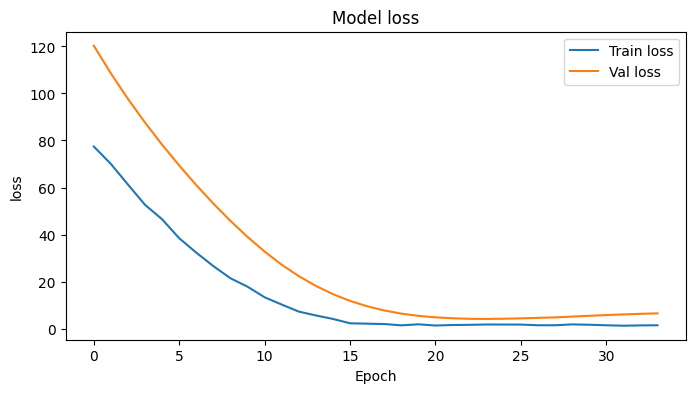
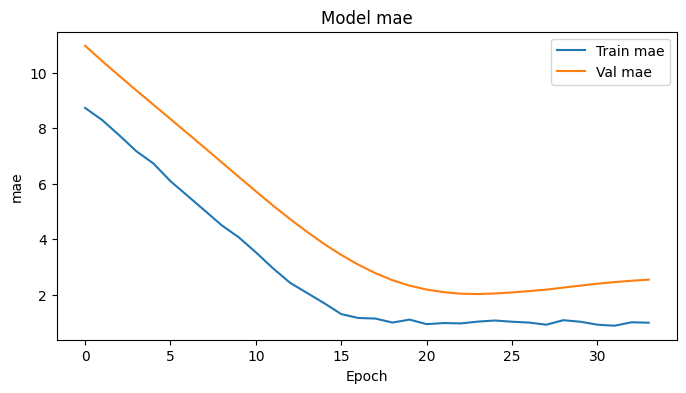
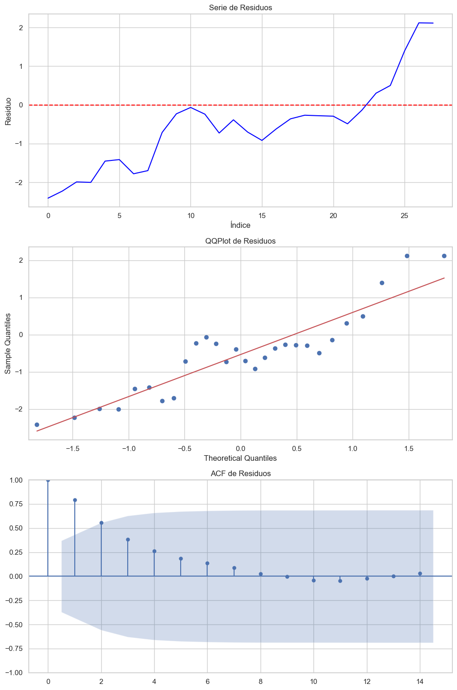

<!DOCTYPE html>


<html lang="en" data-content_root="../" >

  <head>
    <meta charset="utf-8" />
    <meta name="viewport" content="width=device-width, initial-scale=1.0" /><meta name="viewport" content="width=device-width, initial-scale=1" />

    <title>Modelos de Deep Learning &#8212; My sample book</title>
  
  
  
  <script data-cfasync="false">
    document.documentElement.dataset.mode = localStorage.getItem("mode") || "";
    document.documentElement.dataset.theme = localStorage.getItem("theme") || "";
  </script>
  <!-- 
    this give us a css class that will be invisible only if js is disabled 
  -->
  <noscript>
    <style>
      .pst-js-only { display: none !important; }

    </style>
  </noscript>
  
  <!-- Loaded before other Sphinx assets -->
  <link href="../_static/styles/theme.css?digest=26a4bc78f4c0ddb94549" rel="stylesheet" />
<link href="../_static/styles/pydata-sphinx-theme.css?digest=26a4bc78f4c0ddb94549" rel="stylesheet" />

    <link rel="stylesheet" type="text/css" href="../_static/pygments.css?v=fa44fd50" />
    <link rel="stylesheet" type="text/css" href="../_static/styles/sphinx-book-theme.css?v=a3416100" />
    <link rel="stylesheet" type="text/css" href="../_static/togglebutton.css?v=13237357" />
    <link rel="stylesheet" type="text/css" href="../_static/copybutton.css?v=76b2166b" />
    <link rel="stylesheet" type="text/css" href="../_static/mystnb.4510f1fc1dee50b3e5859aac5469c37c29e427902b24a333a5f9fcb2f0b3ac41.css?v=be8a1c11" />
    <link rel="stylesheet" type="text/css" href="../_static/sphinx-thebe.css?v=4fa983c6" />
    <link rel="stylesheet" type="text/css" href="../_static/sphinx-design.min.css?v=95c83b7e" />
  
  <!-- So that users can add custom icons -->
  <script src="../_static/scripts/fontawesome.js?digest=26a4bc78f4c0ddb94549"></script>
  <!-- Pre-loaded scripts that we'll load fully later -->
  <link rel="preload" as="script" href="../_static/scripts/bootstrap.js?digest=26a4bc78f4c0ddb94549" />
<link rel="preload" as="script" href="../_static/scripts/pydata-sphinx-theme.js?digest=26a4bc78f4c0ddb94549" />

    <script src="../_static/documentation_options.js?v=9eb32ce0"></script>
    <script src="../_static/doctools.js?v=9a2dae69"></script>
    <script src="../_static/sphinx_highlight.js?v=dc90522c"></script>
    <script src="../_static/clipboard.min.js?v=a7894cd8"></script>
    <script src="../_static/copybutton.js?v=f281be69"></script>
    <script src="../_static/scripts/sphinx-book-theme.js?v=887ef09a"></script>
    <script>let toggleHintShow = 'Click to show';</script>
    <script>let toggleHintHide = 'Click to hide';</script>
    <script>let toggleOpenOnPrint = 'true';</script>
    <script src="../_static/togglebutton.js?v=4a39c7ea"></script>
    <script>var togglebuttonSelector = '.toggle, .admonition.dropdown';</script>
    <script src="../_static/design-tabs.js?v=f930bc37"></script>
    <script>const THEBE_JS_URL = "https://unpkg.com/thebe@0.8.2/lib/index.js"; const thebe_selector = ".thebe,.cell"; const thebe_selector_input = "pre"; const thebe_selector_output = ".output, .cell_output"</script>
    <script async="async" src="../_static/sphinx-thebe.js?v=c100c467"></script>
    <script>var togglebuttonSelector = '.toggle, .admonition.dropdown';</script>
    <script>const THEBE_JS_URL = "https://unpkg.com/thebe@0.8.2/lib/index.js"; const thebe_selector = ".thebe,.cell"; const thebe_selector_input = "pre"; const thebe_selector_output = ".output, .cell_output"</script>
    <script>DOCUMENTATION_OPTIONS.pagename = 'chapters/deeplearning';</script>
    <link rel="index" title="Index" href="../genindex.html" />
    <link rel="search" title="Search" href="../search.html" />
    <link rel="next" title="Notebooks with MyST Markdown" href="../markdown-notebooks.html" />
    <link rel="prev" title="Markdown Files" href="../markdown.html" />
  <meta name="viewport" content="width=device-width, initial-scale=1"/>
  <meta name="docsearch:language" content="en"/>
  <meta name="docsearch:version" content="" />
  </head>
  
  
  <body data-bs-spy="scroll" data-bs-target=".bd-toc-nav" data-offset="180" data-bs-root-margin="0px 0px -60%" data-default-mode="">

  
  
  <div id="pst-skip-link" class="skip-link d-print-none"><a href="#main-content">Skip to main content</a></div>
  
  <div id="pst-scroll-pixel-helper"></div>
  
  <button type="button" class="btn rounded-pill" id="pst-back-to-top">
    <i class="fa-solid fa-arrow-up"></i>Back to top</button>

  
  <dialog id="pst-search-dialog">
    
<form class="bd-search d-flex align-items-center"
      action="../search.html"
      method="get">
  <i class="fa-solid fa-magnifying-glass"></i>
  <input type="search"
         class="form-control"
         name="q"
         placeholder="Search this book..."
         aria-label="Search this book..."
         autocomplete="off"
         autocorrect="off"
         autocapitalize="off"
         spellcheck="false"/>
  <span class="search-button__kbd-shortcut"><kbd class="kbd-shortcut__modifier">Ctrl</kbd>+<kbd>K</kbd></span>
</form>
  </dialog>

  <div class="pst-async-banner-revealer d-none">
  <aside id="bd-header-version-warning" class="d-none d-print-none" aria-label="Version warning"></aside>
</div>

  
    <header class="bd-header navbar navbar-expand-lg bd-navbar d-print-none">
    </header>
  

  <div class="bd-container">
    <div class="bd-container__inner bd-page-width">
      
      
      
      <dialog id="pst-primary-sidebar-modal"></dialog>
      <div id="pst-primary-sidebar" class="bd-sidebar-primary bd-sidebar">
        

  
  <div class="sidebar-header-items sidebar-primary__section">
    
    
    
    
  </div>
  
    <div class="sidebar-primary-items__start sidebar-primary__section">
        <div class="sidebar-primary-item">

  
    
  

<a class="navbar-brand logo" href="../intro.html">
  
  
  
  
  
    
    
      
    
    
    
    
  
  
</a></div>
        <div class="sidebar-primary-item">

<button class="btn search-button-field search-button__button pst-js-only" title="Search" aria-label="Search" data-bs-placement="bottom" data-bs-toggle="tooltip">
 <i class="fa-solid fa-magnifying-glass"></i>
 <span class="search-button__default-text">Search</span>
 <span class="search-button__kbd-shortcut"><kbd class="kbd-shortcut__modifier">Ctrl</kbd>+<kbd class="kbd-shortcut__modifier">K</kbd></span>
</button></div>
        <div class="sidebar-primary-item"><nav class="bd-links bd-docs-nav" aria-label="Main">
    <div class="bd-toc-item navbar-nav active">
        
        <ul class="nav bd-sidenav bd-sidenav__home-link">
            <li class="toctree-l1">
                <a class="reference internal" href="../intro.html">
                    Welcome to your Jupyter Book
                </a>
            </li>
        </ul>
        <ul class="current nav bd-sidenav">
<li class="toctree-l1"><a class="reference internal" href="../markdown.html">Markdown Files</a></li>
<li class="toctree-l1 current active"><a class="current reference internal" href="#">Modelos de Deep Learning</a></li>
<li class="toctree-l1"><a class="reference internal" href="../markdown-notebooks.html">Notebooks with MyST Markdown</a></li>
</ul>

    </div>
</nav></div>
    </div>
  
  
  <div class="sidebar-primary-items__end sidebar-primary__section">
  </div>
  
  <div id="rtd-footer-container"></div>


      </div>
      
      <main id="main-content" class="bd-main" role="main">
        
        

<div class="sbt-scroll-pixel-helper"></div>

          <div class="bd-content">
            <div class="bd-article-container">
              
              <div class="bd-header-article d-print-none">
<div class="header-article-items header-article__inner">
  
    <div class="header-article-items__start">
      
        <div class="header-article-item"><button class="sidebar-toggle primary-toggle btn btn-sm" title="Toggle primary sidebar" data-bs-placement="bottom" data-bs-toggle="tooltip">
  <span class="fa-solid fa-bars"></span>
</button></div>
      
    </div>
  
  
    <div class="header-article-items__end">
      
        <div class="header-article-item">

<div class="article-header-buttons">


<div class="dropdown dropdown-source-buttons">
  <button class="btn dropdown-toggle" type="button" data-bs-toggle="dropdown" aria-expanded="false" aria-label="Source repositories">
    <i class="fab fa-github"></i>
  </button>
  <ul class="dropdown-menu">
      
      
      
      <li><a href="https://github.com/executablebooks/jupyter-book" target="_blank"
   class="btn btn-sm btn-source-repository-button dropdown-item"
   title="Source repository"
   data-bs-placement="left" data-bs-toggle="tooltip"
>
  

<span class="btn__icon-container">
  <i class="fab fa-github"></i>
  </span>
<span class="btn__text-container">Repository</span>
</a>
</li>
      
      
      
      
      <li><a href="https://github.com/executablebooks/jupyter-book/issues/new?title=Issue%20on%20page%20%2Fchapters/deeplearning.html&body=Your%20issue%20content%20here." target="_blank"
   class="btn btn-sm btn-source-issues-button dropdown-item"
   title="Open an issue"
   data-bs-placement="left" data-bs-toggle="tooltip"
>
  

<span class="btn__icon-container">
  <i class="fas fa-lightbulb"></i>
  </span>
<span class="btn__text-container">Open issue</span>
</a>
</li>
      
  </ul>
</div>


<div class="dropdown dropdown-download-buttons">
  <button class="btn dropdown-toggle" type="button" data-bs-toggle="dropdown" aria-expanded="false" aria-label="Download this page">
    <i class="fas fa-download"></i>
  </button>
  <ul class="dropdown-menu">
      
      
      
      <li><a href="../_sources/chapters/deeplearning.ipynb" target="_blank"
   class="btn btn-sm btn-download-source-button dropdown-item"
   title="Download source file"
   data-bs-placement="left" data-bs-toggle="tooltip"
>
  

<span class="btn__icon-container">
  <i class="fas fa-file"></i>
  </span>
<span class="btn__text-container">.ipynb</span>
</a>
</li>
      
      
      
      
      <li>
<button onclick="window.print()"
  class="btn btn-sm btn-download-pdf-button dropdown-item"
  title="Print to PDF"
  data-bs-placement="left" data-bs-toggle="tooltip"
>
  

<span class="btn__icon-container">
  <i class="fas fa-file-pdf"></i>
  </span>
<span class="btn__text-container">.pdf</span>
</button>
</li>
      
  </ul>
</div>


<button onclick="toggleFullScreen()"
  class="btn btn-sm btn-fullscreen-button"
  title="Fullscreen mode"
  data-bs-placement="bottom" data-bs-toggle="tooltip"
>
  

<span class="btn__icon-container">
  <i class="fas fa-expand"></i>
  </span>

</button>


<button class="btn btn-sm nav-link pst-navbar-icon theme-switch-button pst-js-only" aria-label="Color mode" data-bs-title="Color mode"  data-bs-placement="bottom" data-bs-toggle="tooltip">
  <i class="theme-switch fa-solid fa-sun                fa-lg" data-mode="light" title="Light"></i>
  <i class="theme-switch fa-solid fa-moon               fa-lg" data-mode="dark"  title="Dark"></i>
  <i class="theme-switch fa-solid fa-circle-half-stroke fa-lg" data-mode="auto"  title="System Settings"></i>
</button>


<button class="btn btn-sm pst-navbar-icon search-button search-button__button pst-js-only" title="Search" aria-label="Search" data-bs-placement="bottom" data-bs-toggle="tooltip">
    <i class="fa-solid fa-magnifying-glass fa-lg"></i>
</button>
<button class="sidebar-toggle secondary-toggle btn btn-sm" title="Toggle secondary sidebar" data-bs-placement="bottom" data-bs-toggle="tooltip">
    <span class="fa-solid fa-list"></span>
</button>
</div></div>
      
    </div>
  
</div>
</div>
              
              

<div id="jb-print-docs-body" class="onlyprint">
    <h1>Modelos de Deep Learning</h1>
    <!-- Table of contents -->
    <div id="print-main-content">
        <div id="jb-print-toc">
            
            <div>
                <h2> Contents </h2>
            </div>
            <nav aria-label="Page">
                <ul class="visible nav section-nav flex-column">
<li class="toc-h2 nav-item toc-entry"><a class="reference internal nav-link" href="#split-de-datos">Split de datos</a></li>
<li class="toc-h2 nav-item toc-entry"><a class="reference internal nav-link" href="#conjuntos-de-datos-a-evaluar">Conjuntos de datos a evaluar</a></li>
<li class="toc-h2 nav-item toc-entry"><a class="reference internal nav-link" href="#entrenamiento-y-validacion">Entrenamiento y validación</a><ul class="nav section-nav flex-column">
<li class="toc-h3 nav-item toc-entry"><a class="reference internal nav-link" href="#un-modelo-testing">Un modelo (testing)</a></li>
<li class="toc-h3 nav-item toc-entry"><a class="reference internal nav-link" href="#procesamiento-por-lotes-modelos">Procesamiento por lotes Modelos</a></li>
<li class="toc-h3 nav-item toc-entry"><a class="reference internal nav-link" href="#ejecucion-loop">Ejecución loop</a></li>
</ul>
</li>
</ul>
            </nav>
        </div>
    </div>
</div>

              
                
<div id="searchbox"></div>
                <article class="bd-article">
                  
  <section class="tex2jax_ignore mathjax_ignore" id="modelos-de-deep-learning">
<h1>Modelos de Deep Learning<a class="headerlink" href="#modelos-de-deep-learning" title="Link to this heading">#</a></h1>
<div class="cell docutils container">
<div class="cell_input docutils container">
<div class="highlight-ipython3 notranslate"><div class="highlight"><pre><span></span><span class="kn">import</span> <span class="nn">numpy</span> <span class="k">as</span> <span class="nn">np</span>
<span class="kn">import</span> <span class="nn">pandas</span> <span class="k">as</span> <span class="nn">pd</span>
<span class="kn">import</span> <span class="nn">matplotlib.pyplot</span> <span class="k">as</span> <span class="nn">plt</span>
<span class="kn">import</span> <span class="nn">seaborn</span> <span class="k">as</span> <span class="nn">sns</span>
<span class="kn">import</span> <span class="nn">itertools</span>
<span class="kn">import</span> <span class="nn">os</span>
<span class="kn">import</span> <span class="nn">warnings</span>
<span class="n">warnings</span><span class="o">.</span><span class="n">filterwarnings</span><span class="p">(</span><span class="s2">&quot;ignore&quot;</span><span class="p">)</span>
</pre></div>
</div>
</div>
</div>
<div class="cell docutils container">
<div class="cell_input docutils container">
<div class="highlight-ipython3 notranslate"><div class="highlight"><pre><span></span><span class="n">df</span> <span class="o">=</span> <span class="n">pd</span><span class="o">.</span><span class="n">read_csv</span><span class="p">(</span><span class="s2">&quot;https://raw.githubusercontent.com/lihkir/Data/refs/heads/main/Bitcoin%20Historical%20Data.csv&quot;</span><span class="p">,</span> <span class="n">thousands</span><span class="o">=</span><span class="s1">&#39;,&#39;</span><span class="p">,</span> <span class="n">decimal</span><span class="o">=</span><span class="s1">&#39;.&#39;</span><span class="p">)</span>
<span class="n">df</span><span class="p">[</span><span class="s2">&quot;Date&quot;</span><span class="p">]</span> <span class="o">=</span> <span class="n">pd</span><span class="o">.</span><span class="n">to_datetime</span><span class="p">(</span><span class="n">df</span><span class="p">[</span><span class="s2">&quot;Date&quot;</span><span class="p">])</span>
<span class="n">df</span> <span class="o">=</span> <span class="n">df</span><span class="o">.</span><span class="n">set_index</span><span class="p">(</span><span class="s2">&quot;Date&quot;</span><span class="p">)</span>
<span class="n">df</span><span class="o">.</span><span class="n">sort_index</span><span class="p">(</span><span class="n">inplace</span><span class="o">=</span><span class="kc">True</span><span class="p">)</span>
<span class="n">df</span>
</pre></div>
</div>
</div>
<div class="cell_output docutils container">
<div class="output text_html"><div>
<style scoped>
    .dataframe tbody tr th:only-of-type {
        vertical-align: middle;
    }

    .dataframe tbody tr th {
        vertical-align: top;
    }

    .dataframe thead th {
        text-align: right;
    }
</style>
<table border="1" class="dataframe">
  <thead>
    <tr style="text-align: right;">
      <th></th>
      <th>Price</th>
      <th>Open</th>
      <th>High</th>
      <th>Low</th>
      <th>Vol.</th>
      <th>Change %</th>
    </tr>
    <tr>
      <th>Date</th>
      <th></th>
      <th></th>
      <th></th>
      <th></th>
      <th></th>
      <th></th>
    </tr>
  </thead>
  <tbody>
    <tr>
      <th>2010-07-18</th>
      <td>0.1</td>
      <td>0.0</td>
      <td>0.1</td>
      <td>0.1</td>
      <td>0.08K</td>
      <td>0.00%</td>
    </tr>
    <tr>
      <th>2010-07-19</th>
      <td>0.1</td>
      <td>0.1</td>
      <td>0.1</td>
      <td>0.1</td>
      <td>0.57K</td>
      <td>0.00%</td>
    </tr>
    <tr>
      <th>2010-07-20</th>
      <td>0.1</td>
      <td>0.1</td>
      <td>0.1</td>
      <td>0.1</td>
      <td>0.26K</td>
      <td>0.00%</td>
    </tr>
    <tr>
      <th>2010-07-21</th>
      <td>0.1</td>
      <td>0.1</td>
      <td>0.1</td>
      <td>0.1</td>
      <td>0.58K</td>
      <td>0.00%</td>
    </tr>
    <tr>
      <th>2010-07-22</th>
      <td>0.1</td>
      <td>0.1</td>
      <td>0.1</td>
      <td>0.1</td>
      <td>2.16K</td>
      <td>0.00%</td>
    </tr>
    <tr>
      <th>...</th>
      <td>...</td>
      <td>...</td>
      <td>...</td>
      <td>...</td>
      <td>...</td>
      <td>...</td>
    </tr>
    <tr>
      <th>2024-03-20</th>
      <td>67854.0</td>
      <td>62046.8</td>
      <td>68029.5</td>
      <td>60850.9</td>
      <td>133.53K</td>
      <td>9.35%</td>
    </tr>
    <tr>
      <th>2024-03-21</th>
      <td>65503.8</td>
      <td>67860.0</td>
      <td>68161.7</td>
      <td>64616.1</td>
      <td>75.26K</td>
      <td>-3.46%</td>
    </tr>
    <tr>
      <th>2024-03-22</th>
      <td>63785.5</td>
      <td>65501.5</td>
      <td>66633.3</td>
      <td>62328.3</td>
      <td>72.43K</td>
      <td>-2.62%</td>
    </tr>
    <tr>
      <th>2024-03-23</th>
      <td>64037.8</td>
      <td>63785.6</td>
      <td>65972.4</td>
      <td>63074.9</td>
      <td>35.11K</td>
      <td>0.40%</td>
    </tr>
    <tr>
      <th>2024-03-24</th>
      <td>67211.9</td>
      <td>64036.5</td>
      <td>67587.8</td>
      <td>63812.9</td>
      <td>65.59K</td>
      <td>4.96%</td>
    </tr>
  </tbody>
</table>
<p>4999 rows × 6 columns</p>
</div></div></div>
</div>
<div class="cell docutils container">
<div class="cell_input docutils container">
<div class="highlight-ipython3 notranslate"><div class="highlight"><pre><span></span><span class="c1"># retorno acumulado</span>
<span class="k">def</span> <span class="nf">retorno_acumulado</span><span class="p">(</span><span class="n">df</span><span class="p">,</span> <span class="n">columna</span><span class="p">):</span>
    <span class="n">retorno_diario</span> <span class="o">=</span> <span class="p">(</span><span class="n">df</span><span class="p">[</span><span class="n">columna</span><span class="p">]</span><span class="o">.</span><span class="n">diff</span><span class="p">()</span> <span class="o">/</span> <span class="n">df</span><span class="p">[</span><span class="n">columna</span><span class="p">]</span><span class="o">.</span><span class="n">shift</span><span class="p">(</span><span class="mi">1</span><span class="p">))</span>
    <span class="k">return</span> <span class="n">retorno_diario</span><span class="o">.</span><span class="n">cumsum</span><span class="p">()</span>

<span class="k">def</span> <span class="nf">volatilidad</span><span class="p">(</span><span class="n">retorno_acum</span><span class="p">,</span> <span class="n">ventana</span><span class="p">):</span>
    <span class="n">std_w</span> <span class="o">=</span> <span class="n">retorno_acum</span><span class="o">.</span><span class="n">rolling</span><span class="p">(</span><span class="n">window</span><span class="o">=</span><span class="n">ventana</span><span class="p">)</span><span class="o">.</span><span class="n">std</span><span class="p">()</span>
    <span class="k">return</span> <span class="n">std_w</span>


<span class="n">df</span><span class="p">[</span><span class="s2">&quot;DailyReturn&quot;</span><span class="p">]</span> <span class="o">=</span> <span class="n">retorno_acumulado</span><span class="p">(</span><span class="n">df</span><span class="p">,</span> <span class="s2">&quot;Price&quot;</span><span class="p">)</span>
<span class="n">df</span><span class="p">[</span><span class="s2">&quot;Volatility&quot;</span><span class="p">]</span> <span class="o">=</span>  <span class="n">volatilidad</span><span class="p">(</span><span class="n">df</span><span class="p">[</span><span class="s2">&quot;DailyReturn&quot;</span><span class="p">],</span> <span class="mi">7</span><span class="p">)</span>

<span class="n">df</span>
</pre></div>
</div>
</div>
<div class="cell_output docutils container">
<div class="output text_html"><div>
<style scoped>
    .dataframe tbody tr th:only-of-type {
        vertical-align: middle;
    }

    .dataframe tbody tr th {
        vertical-align: top;
    }

    .dataframe thead th {
        text-align: right;
    }
</style>
<table border="1" class="dataframe">
  <thead>
    <tr style="text-align: right;">
      <th></th>
      <th>Price</th>
      <th>Open</th>
      <th>High</th>
      <th>Low</th>
      <th>Vol.</th>
      <th>Change %</th>
      <th>DailyReturn</th>
      <th>Volatility</th>
    </tr>
    <tr>
      <th>Date</th>
      <th></th>
      <th></th>
      <th></th>
      <th></th>
      <th></th>
      <th></th>
      <th></th>
      <th></th>
    </tr>
  </thead>
  <tbody>
    <tr>
      <th>2010-07-18</th>
      <td>0.1</td>
      <td>0.0</td>
      <td>0.1</td>
      <td>0.1</td>
      <td>0.08K</td>
      <td>0.00%</td>
      <td>NaN</td>
      <td>NaN</td>
    </tr>
    <tr>
      <th>2010-07-19</th>
      <td>0.1</td>
      <td>0.1</td>
      <td>0.1</td>
      <td>0.1</td>
      <td>0.57K</td>
      <td>0.00%</td>
      <td>0.000000</td>
      <td>NaN</td>
    </tr>
    <tr>
      <th>2010-07-20</th>
      <td>0.1</td>
      <td>0.1</td>
      <td>0.1</td>
      <td>0.1</td>
      <td>0.26K</td>
      <td>0.00%</td>
      <td>0.000000</td>
      <td>NaN</td>
    </tr>
    <tr>
      <th>2010-07-21</th>
      <td>0.1</td>
      <td>0.1</td>
      <td>0.1</td>
      <td>0.1</td>
      <td>0.58K</td>
      <td>0.00%</td>
      <td>0.000000</td>
      <td>NaN</td>
    </tr>
    <tr>
      <th>2010-07-22</th>
      <td>0.1</td>
      <td>0.1</td>
      <td>0.1</td>
      <td>0.1</td>
      <td>2.16K</td>
      <td>0.00%</td>
      <td>0.000000</td>
      <td>NaN</td>
    </tr>
    <tr>
      <th>...</th>
      <td>...</td>
      <td>...</td>
      <td>...</td>
      <td>...</td>
      <td>...</td>
      <td>...</td>
      <td>...</td>
      <td>...</td>
    </tr>
    <tr>
      <th>2024-03-20</th>
      <td>67854.0</td>
      <td>62046.8</td>
      <td>68029.5</td>
      <td>60850.9</td>
      <td>133.53K</td>
      <td>9.35%</td>
      <td>23.719802</td>
      <td>0.043620</td>
    </tr>
    <tr>
      <th>2024-03-21</th>
      <td>65503.8</td>
      <td>67860.0</td>
      <td>68161.7</td>
      <td>64616.1</td>
      <td>75.26K</td>
      <td>-3.46%</td>
      <td>23.685166</td>
      <td>0.036828</td>
    </tr>
    <tr>
      <th>2024-03-22</th>
      <td>63785.5</td>
      <td>65501.5</td>
      <td>66633.3</td>
      <td>62328.3</td>
      <td>72.43K</td>
      <td>-2.62%</td>
      <td>23.658934</td>
      <td>0.034760</td>
    </tr>
    <tr>
      <th>2024-03-23</th>
      <td>64037.8</td>
      <td>63785.6</td>
      <td>65972.4</td>
      <td>63074.9</td>
      <td>35.11K</td>
      <td>0.40%</td>
      <td>23.662889</td>
      <td>0.035509</td>
    </tr>
    <tr>
      <th>2024-03-24</th>
      <td>67211.9</td>
      <td>64036.5</td>
      <td>67587.8</td>
      <td>63812.9</td>
      <td>65.59K</td>
      <td>4.96%</td>
      <td>23.712455</td>
      <td>0.034305</td>
    </tr>
  </tbody>
</table>
<p>4999 rows × 8 columns</p>
</div></div></div>
</div>
<div class="cell docutils container">
<div class="cell_input docutils container">
<div class="highlight-ipython3 notranslate"><div class="highlight"><pre><span></span><span class="n">timeserie</span>  <span class="o">=</span> <span class="n">df</span><span class="p">[</span><span class="s2">&quot;Price&quot;</span><span class="p">]</span>
</pre></div>
</div>
</div>
</div>
<section id="split-de-datos">
<h2>Split de datos<a class="headerlink" href="#split-de-datos" title="Link to this heading">#</a></h2>
<div class="cell docutils container">
<div class="cell_input docutils container">
<div class="highlight-ipython3 notranslate"><div class="highlight"><pre><span></span><span class="k">def</span> <span class="nf">split_time_series</span><span class="p">(</span><span class="n">data</span><span class="p">,</span> <span class="n">tau</span><span class="p">,</span> <span class="n">train_nrows</span><span class="p">,</span> <span class="n">train_ncols</span><span class="o">=</span><span class="mi">0</span><span class="p">):</span>
<span class="w">    </span><span class="sd">&quot;&quot;&quot;</span>
<span class="sd">    train_ncols: Número de columnas para el train</span>
<span class="sd">    train_nrows: Número de filas para el train</span>
<span class="sd">    tau: número de rows y cols para val y test</span>
<span class="sd">    &quot;&quot;&quot;</span>
    <span class="n">n_samples</span> <span class="o">=</span> <span class="nb">len</span><span class="p">(</span><span class="n">data</span><span class="p">)</span>
    <span class="n">len_dim</span> <span class="o">=</span> <span class="n">train_nrows</span> <span class="o">+</span> <span class="n">tau</span> <span class="o">*</span> <span class="mi">2</span>  <span class="c1"># total filas por dim</span>
    <span class="n">train_ncols</span> <span class="o">=</span> <span class="n">tau</span>
    <span class="n">splits</span> <span class="o">=</span> <span class="p">[]</span>
    <span class="n">id_counter</span> <span class="o">=</span> <span class="mi">1</span>
    <span class="n">dim</span> <span class="o">=</span> <span class="mi">1</span>
    <span class="n">split_counter</span> <span class="o">=</span> <span class="mi">0</span>

    <span class="k">for</span> <span class="n">start</span> <span class="ow">in</span> <span class="nb">range</span><span class="p">(</span><span class="n">n_samples</span><span class="p">):</span>
        <span class="k">if</span> <span class="n">split_counter</span> <span class="o">==</span> <span class="mi">0</span><span class="p">:</span>
            <span class="k">if</span> <span class="n">start</span> <span class="o">+</span> <span class="n">len_dim</span> <span class="o">&gt;</span> <span class="n">n_samples</span><span class="p">:</span>
                <span class="k">break</span>  <span class="c1"># No hay suficientes datos</span>
        
        <span class="n">current_dim_start_idx</span> <span class="o">=</span> <span class="nb">len</span><span class="p">(</span><span class="n">splits</span><span class="p">)</span>
        
        <span class="n">x_train_end</span> <span class="o">=</span> <span class="n">start</span> <span class="o">+</span> <span class="n">train_ncols</span>
        <span class="n">x_tau_end</span> <span class="o">=</span> <span class="n">start</span> <span class="o">+</span> <span class="n">tau</span>


        <span class="c1"># Determinar el tipo de split</span>
        <span class="k">if</span> <span class="n">split_counter</span> <span class="o">&lt;</span> <span class="n">train_nrows</span><span class="p">:</span>
            <span class="n">split_type</span> <span class="o">=</span> <span class="s2">&quot;train&quot;</span>
            <span class="n">X_data</span> <span class="o">=</span> <span class="n">data</span><span class="o">.</span><span class="n">iloc</span><span class="p">[</span><span class="n">start</span><span class="p">:</span><span class="n">x_train_end</span><span class="p">]</span><span class="o">.</span><span class="n">values</span><span class="o">.</span><span class="n">copy</span><span class="p">()</span>  <span class="c1"># Tomar train_ncols columnas</span>
            <span class="n">y_data</span> <span class="o">=</span> <span class="n">data</span><span class="o">.</span><span class="n">iloc</span><span class="p">[</span><span class="n">x_train_end</span><span class="p">:</span><span class="n">x_train_end</span> <span class="o">+</span><span class="mi">1</span> <span class="p">]</span><span class="o">.</span><span class="n">values</span><span class="o">.</span><span class="n">copy</span><span class="p">()</span>  <span class="c1"># y correspondiente a train_nrows</span>
        <span class="k">elif</span> <span class="n">split_counter</span> <span class="o">&lt;</span> <span class="n">train_nrows</span> <span class="o">+</span> <span class="n">tau</span><span class="p">:</span>
            <span class="n">split_type</span> <span class="o">=</span> <span class="s2">&quot;val&quot;</span>
            <span class="n">X_data</span> <span class="o">=</span> <span class="n">data</span><span class="o">.</span><span class="n">iloc</span><span class="p">[</span><span class="n">start</span><span class="p">:</span><span class="n">x_tau_end</span><span class="p">]</span><span class="o">.</span><span class="n">values</span><span class="o">.</span><span class="n">copy</span><span class="p">()</span>  <span class="c1"># val: tau columnas</span>
            <span class="n">y_data</span> <span class="o">=</span> <span class="n">data</span><span class="o">.</span><span class="n">iloc</span><span class="p">[</span><span class="n">x_tau_end</span><span class="p">:</span><span class="n">x_tau_end</span> <span class="o">+</span> <span class="mi">1</span><span class="p">]</span><span class="o">.</span><span class="n">values</span><span class="o">.</span><span class="n">copy</span><span class="p">()</span>  <span class="c1"># y correspondiente al tau</span>
        <span class="k">elif</span> <span class="n">split_counter</span> <span class="o">&lt;</span> <span class="n">len_dim</span><span class="p">:</span>
            <span class="n">split_type</span> <span class="o">=</span> <span class="s2">&quot;test&quot;</span>
            <span class="n">X_data</span> <span class="o">=</span> <span class="n">data</span><span class="o">.</span><span class="n">iloc</span><span class="p">[</span><span class="n">start</span><span class="p">:</span><span class="n">x_tau_end</span><span class="p">]</span><span class="o">.</span><span class="n">values</span><span class="o">.</span><span class="n">copy</span><span class="p">()</span>  <span class="c1"># test: tau columnas</span>
            <span class="n">y_data</span> <span class="o">=</span> <span class="n">data</span><span class="o">.</span><span class="n">iloc</span><span class="p">[</span><span class="n">x_tau_end</span><span class="p">:</span><span class="n">x_tau_end</span> <span class="o">+</span> <span class="mi">1</span><span class="p">]</span><span class="o">.</span><span class="n">values</span><span class="o">.</span><span class="n">copy</span><span class="p">()</span>  <span class="c1"># y correspondiente al tau</span>
        <span class="k">else</span><span class="p">:</span>
            <span class="n">dim</span> <span class="o">+=</span> <span class="mi">1</span>
            <span class="n">split_counter</span> <span class="o">=</span> <span class="mi">0</span>
            <span class="n">split_type</span> <span class="o">=</span> <span class="s2">&quot;train&quot;</span>
            <span class="k">continue</span>
        <span class="k">if</span> <span class="nb">len</span><span class="p">(</span><span class="n">y_data</span><span class="p">)</span> <span class="o">==</span> <span class="mi">0</span><span class="p">:</span>
            <span class="k">break</span>  <span class="c1"># algún muestra no tiene y, por tanto, no consideremos este dim</span>

        <span class="n">split_dict</span> <span class="o">=</span> <span class="p">{</span>
            <span class="s2">&quot;id&quot;</span><span class="p">:</span> <span class="n">id_counter</span><span class="p">,</span>
            <span class="s2">&quot;dim&quot;</span><span class="p">:</span> <span class="n">dim</span><span class="p">,</span>
            <span class="s2">&quot;split&quot;</span><span class="p">:</span> <span class="n">split_type</span><span class="p">,</span>
            <span class="s2">&quot;X&quot;</span><span class="p">:</span> <span class="n">X_data</span><span class="p">,</span>
            <span class="s2">&quot;y&quot;</span><span class="p">:</span> <span class="n">y_data</span>
        <span class="p">}</span>

        <span class="n">splits</span><span class="o">.</span><span class="n">append</span><span class="p">(</span><span class="n">split_dict</span><span class="p">)</span>

        <span class="c1"># Contadores</span>
        <span class="n">id_counter</span> <span class="o">+=</span> <span class="mi">1</span>
        <span class="n">split_counter</span> <span class="o">+=</span> <span class="mi">1</span>

        <span class="k">if</span> <span class="n">split_counter</span> <span class="o">&gt;=</span> <span class="n">len_dim</span><span class="p">:</span>
            <span class="n">dim</span> <span class="o">+=</span> <span class="mi">1</span>
            <span class="n">split_counter</span> <span class="o">=</span> <span class="mi">0</span>

    <span class="n">df</span> <span class="o">=</span> <span class="n">pd</span><span class="o">.</span><span class="n">DataFrame</span><span class="p">(</span><span class="n">splits</span><span class="p">)</span>
    <span class="n">dim_ok</span> <span class="o">=</span> <span class="n">df</span><span class="p">[</span><span class="s2">&quot;dim&quot;</span><span class="p">]</span><span class="o">.</span><span class="n">value_counts</span><span class="p">()</span> <span class="o">==</span> <span class="n">len_dim</span>
    <span class="n">df_ok</span> <span class="o">=</span> <span class="n">df</span><span class="o">.</span><span class="n">loc</span><span class="p">[</span><span class="n">df</span><span class="p">[</span><span class="s2">&quot;dim&quot;</span><span class="p">]</span><span class="o">.</span><span class="n">isin</span><span class="p">(</span><span class="n">dim_ok</span><span class="p">[</span><span class="n">dim_ok</span><span class="p">]</span><span class="o">.</span><span class="n">index</span><span class="p">)]</span><span class="o">.</span><span class="n">copy</span><span class="p">()</span>
    <span class="k">return</span> <span class="n">df_ok</span>
</pre></div>
</div>
</div>
</div>
<div class="cell docutils container">
<div class="cell_input docutils container">
<div class="highlight-ipython3 notranslate"><div class="highlight"><pre><span></span><span class="c1">## PENDIENTE</span>
<span class="k">def</span> <span class="nf">plot_splits</span><span class="p">(</span><span class="n">data</span><span class="p">,</span> <span class="n">splits</span><span class="p">,</span> <span class="n">horizon</span><span class="p">,</span> <span class="n">dim</span><span class="o">=</span><span class="mi">1</span><span class="p">):</span>
    <span class="k">return</span> <span class="mi">1</span>
</pre></div>
</div>
</div>
</div>
</section>
<section id="conjuntos-de-datos-a-evaluar">
<h2>Conjuntos de datos a evaluar<a class="headerlink" href="#conjuntos-de-datos-a-evaluar" title="Link to this heading">#</a></h2>
<div class="cell docutils container">
<div class="cell_input docutils container">
<div class="highlight-ipython3 notranslate"><div class="highlight"><pre><span></span><span class="n">series_name</span> <span class="o">=</span> <span class="p">[</span><span class="s2">&quot;Price&quot;</span><span class="p">,</span> <span class="s2">&quot;DailyReturn&quot;</span><span class="p">,</span><span class="s2">&quot;Volatility&quot;</span><span class="p">]</span>
<span class="n">tau_list</span> <span class="o">=</span> <span class="p">[</span><span class="mi">7</span><span class="p">,</span><span class="mi">14</span><span class="p">,</span><span class="mi">21</span><span class="p">,</span><span class="mi">28</span><span class="p">]</span>
<span class="n">train_lens</span> <span class="o">=</span> <span class="p">[</span><span class="mi">7</span><span class="p">,</span><span class="mi">14</span><span class="p">,</span><span class="mi">21</span><span class="p">,</span><span class="mi">28</span><span class="p">]</span>

<span class="n">datasets</span> <span class="o">=</span> <span class="p">{}</span>

<span class="k">for</span> <span class="n">serie</span><span class="p">,</span> <span class="n">tau</span><span class="p">,</span> <span class="n">train_nrows</span> <span class="ow">in</span> <span class="n">itertools</span><span class="o">.</span><span class="n">product</span><span class="p">(</span><span class="n">series_name</span><span class="p">,</span> <span class="n">tau_list</span><span class="p">,</span> <span class="n">train_lens</span><span class="p">):</span>
    <span class="n">key</span> <span class="o">=</span> <span class="sa">f</span><span class="s2">&quot;</span><span class="si">{</span><span class="n">serie</span><span class="si">}</span><span class="s2">_tau</span><span class="si">{</span><span class="n">tau</span><span class="si">}</span><span class="s2">_train_rows</span><span class="si">{</span><span class="n">train_nrows</span><span class="si">}</span><span class="s2">&quot;</span>
    <span class="n">dataset</span> <span class="o">=</span> <span class="n">split_time_series</span><span class="p">(</span><span class="n">data</span><span class="o">=</span><span class="n">df</span><span class="p">[</span><span class="n">serie</span><span class="p">],</span> <span class="n">tau</span><span class="o">=</span><span class="n">tau</span><span class="p">,</span> <span class="n">train_nrows</span><span class="o">=</span><span class="n">train_nrows</span><span class="p">)</span>
    <span class="n">datasets</span><span class="p">[</span><span class="n">key</span><span class="p">]</span> <span class="o">=</span> <span class="n">dataset</span>
</pre></div>
</div>
</div>
</div>
<div class="cell docutils container">
<div class="cell_input docutils container">
<div class="highlight-ipython3 notranslate"><div class="highlight"><pre><span></span><span class="nb">len</span><span class="p">(</span><span class="n">datasets</span><span class="o">.</span><span class="n">keys</span><span class="p">())</span>
</pre></div>
</div>
</div>
<div class="cell_output docutils container">
<div class="output text_plain highlight-myst-ansi notranslate"><div class="highlight"><pre><span></span>48
</pre></div>
</div>
</div>
</div>
<div class="cell docutils container">
<div class="cell_input docutils container">
<div class="highlight-ipython3 notranslate"><div class="highlight"><pre><span></span><span class="c1">#Vemos uno de los datasets</span>
<span class="n">df_model</span> <span class="o">=</span> <span class="n">datasets</span><span class="o">.</span><span class="n">get</span><span class="p">(</span><span class="s2">&quot;Price_tau7_train_rows28&quot;</span><span class="p">)</span>
<span class="n">df_model</span>
</pre></div>
</div>
</div>
<div class="cell_output docutils container">
<div class="output text_html"><div>
<style scoped>
    .dataframe tbody tr th:only-of-type {
        vertical-align: middle;
    }

    .dataframe tbody tr th {
        vertical-align: top;
    }

    .dataframe thead th {
        text-align: right;
    }
</style>
<table border="1" class="dataframe">
  <thead>
    <tr style="text-align: right;">
      <th></th>
      <th>id</th>
      <th>dim</th>
      <th>split</th>
      <th>X</th>
      <th>y</th>
    </tr>
  </thead>
  <tbody>
    <tr>
      <th>0</th>
      <td>1</td>
      <td>1</td>
      <td>train</td>
      <td>[0.1, 0.1, 0.1, 0.1, 0.1, 0.1, 0.1]</td>
      <td>[0.1]</td>
    </tr>
    <tr>
      <th>1</th>
      <td>2</td>
      <td>1</td>
      <td>train</td>
      <td>[0.1, 0.1, 0.1, 0.1, 0.1, 0.1, 0.1]</td>
      <td>[0.1]</td>
    </tr>
    <tr>
      <th>2</th>
      <td>3</td>
      <td>1</td>
      <td>train</td>
      <td>[0.1, 0.1, 0.1, 0.1, 0.1, 0.1, 0.1]</td>
      <td>[0.1]</td>
    </tr>
    <tr>
      <th>3</th>
      <td>4</td>
      <td>1</td>
      <td>train</td>
      <td>[0.1, 0.1, 0.1, 0.1, 0.1, 0.1, 0.1]</td>
      <td>[0.1]</td>
    </tr>
    <tr>
      <th>4</th>
      <td>5</td>
      <td>1</td>
      <td>train</td>
      <td>[0.1, 0.1, 0.1, 0.1, 0.1, 0.1, 0.1]</td>
      <td>[0.1]</td>
    </tr>
    <tr>
      <th>...</th>
      <td>...</td>
      <td>...</td>
      <td>...</td>
      <td>...</td>
      <td>...</td>
    </tr>
    <tr>
      <th>4951</th>
      <td>4952</td>
      <td>118</td>
      <td>test</td>
      <td>[43087.7, 44339.8, 45293.3, 47127.5, 47758.2, ...</td>
      <td>[49716.0]</td>
    </tr>
    <tr>
      <th>4952</th>
      <td>4953</td>
      <td>118</td>
      <td>test</td>
      <td>[44339.8, 45293.3, 47127.5, 47758.2, 48277.3, ...</td>
      <td>[51782.4]</td>
    </tr>
    <tr>
      <th>4953</th>
      <td>4954</td>
      <td>118</td>
      <td>test</td>
      <td>[45293.3, 47127.5, 47758.2, 48277.3, 49941.3, ...</td>
      <td>[51901.3]</td>
    </tr>
    <tr>
      <th>4954</th>
      <td>4955</td>
      <td>118</td>
      <td>test</td>
      <td>[47127.5, 47758.2, 48277.3, 49941.3, 49716.0, ...</td>
      <td>[52134.2]</td>
    </tr>
    <tr>
      <th>4955</th>
      <td>4956</td>
      <td>118</td>
      <td>test</td>
      <td>[47758.2, 48277.3, 49941.3, 49716.0, 51782.4, ...</td>
      <td>[51646.0]</td>
    </tr>
  </tbody>
</table>
<p>4956 rows × 5 columns</p>
</div></div></div>
</div>
<div class="cell docutils container">
<div class="cell_input docutils container">
<div class="highlight-ipython3 notranslate"><div class="highlight"><pre><span></span><span class="n">count</span> <span class="o">=</span> <span class="mi">0</span>
<span class="k">for</span> <span class="n">key</span> <span class="ow">in</span> <span class="n">datasets</span><span class="o">.</span><span class="n">keys</span><span class="p">():</span>
    <span class="n">count</span> <span class="o">+=</span> <span class="nb">len</span><span class="p">(</span><span class="n">datasets</span><span class="o">.</span><span class="n">get</span><span class="p">(</span><span class="n">key</span><span class="p">)</span><span class="o">.</span><span class="n">dim</span><span class="o">.</span><span class="n">unique</span><span class="p">())</span>
    
<span class="nb">print</span><span class="p">(</span><span class="sa">f</span><span class="s2">&quot;Hay en total </span><span class="si">{</span><span class="n">count</span><span class="si">}</span><span class="s2"> pliegues (o &#39;dims&#39;) para entrenar los modelos&quot;</span><span class="p">)</span>
</pre></div>
</div>
</div>
<div class="cell_output docutils container">
<div class="output stream highlight-myst-ansi notranslate"><div class="highlight"><pre><span></span>Hay en total 5208 pliegues (o &#39;dims&#39;) para entrenar los modelos
</pre></div>
</div>
</div>
</div>
</section>
<section id="entrenamiento-y-validacion">
<h2>Entrenamiento y validación<a class="headerlink" href="#entrenamiento-y-validacion" title="Link to this heading">#</a></h2>
<section id="un-modelo-testing">
<h3>Un modelo (testing)<a class="headerlink" href="#un-modelo-testing" title="Link to this heading">#</a></h3>
<div class="cell docutils container">
<div class="cell_input docutils container">
<div class="highlight-ipython3 notranslate"><div class="highlight"><pre><span></span><span class="kn">import</span> <span class="nn">keras.backend</span> <span class="k">as</span> <span class="nn">K</span>
<span class="kn">import</span> <span class="nn">statsmodels.api</span> <span class="k">as</span> <span class="nn">sm</span>
<span class="kn">import</span> <span class="nn">tensorflow</span> <span class="k">as</span> <span class="nn">tf</span>
<span class="kn">from</span> <span class="nn">scipy</span> <span class="kn">import</span> <span class="n">stats</span>
<span class="kn">import</span> <span class="nn">gc</span>
<span class="kn">from</span> <span class="nn">sklearn.preprocessing</span> <span class="kn">import</span> <span class="n">StandardScaler</span>
<span class="kn">from</span> <span class="nn">sklearn.metrics</span> <span class="kn">import</span> <span class="n">mean_absolute_percentage_error</span><span class="p">,</span> <span class="n">mean_absolute_error</span><span class="p">,</span> <span class="n">root_mean_squared_error</span><span class="p">,</span> <span class="n">mean_squared_error</span><span class="p">,</span><span class="n">r2_score</span>
<span class="kn">from</span> <span class="nn">statsmodels.graphics.tsaplots</span> <span class="kn">import</span> <span class="n">plot_acf</span>
<span class="kn">from</span> <span class="nn">scipy.stats</span> <span class="kn">import</span> <span class="n">jarque_bera</span>
<span class="kn">from</span> <span class="nn">tensorflow.keras.models</span> <span class="kn">import</span> <span class="n">Sequential</span><span class="p">,</span> <span class="n">load_model</span>
<span class="kn">from</span> <span class="nn">tensorflow.keras.layers</span> <span class="kn">import</span> <span class="n">Dense</span><span class="p">,</span> <span class="n">SimpleRNN</span><span class="p">,</span> <span class="n">LSTM</span><span class="p">,</span> <span class="n">Dropout</span>
<span class="kn">from</span> <span class="nn">tensorflow.keras.optimizers</span> <span class="kn">import</span> <span class="n">Adam</span>
<span class="kn">from</span> <span class="nn">tensorflow.keras.callbacks</span> <span class="kn">import</span> <span class="n">EarlyStopping</span><span class="p">,</span> <span class="n">ModelCheckpoint</span>
<span class="kn">from</span> <span class="nn">statsmodels.stats.diagnostic</span> <span class="kn">import</span> <span class="n">acorr_ljungbox</span>
<span class="kn">from</span> <span class="nn">statsmodels.graphics.gofplots</span> <span class="kn">import</span> <span class="n">qqplot</span>
<span class="kn">from</span> <span class="nn">statsmodels.graphics.tsaplots</span> <span class="kn">import</span> <span class="n">plot_acf</span>
</pre></div>
</div>
</div>
</div>
<div class="cell docutils container">
<div class="cell_input docutils container">
<div class="highlight-ipython3 notranslate"><div class="highlight"><pre><span></span><span class="n">gpus</span> <span class="o">=</span> <span class="n">tf</span><span class="o">.</span><span class="n">config</span><span class="o">.</span><span class="n">list_physical_devices</span><span class="p">(</span><span class="s1">&#39;GPU&#39;</span><span class="p">)</span>
<span class="k">if</span> <span class="n">gpus</span><span class="p">:</span>
    <span class="nb">print</span><span class="p">(</span><span class="s2">&quot;TensorFlow is using GPU.&quot;</span><span class="p">)</span>
    <span class="k">for</span> <span class="n">gpu</span> <span class="ow">in</span> <span class="n">gpus</span><span class="p">:</span>
        <span class="n">gpu_details</span> <span class="o">=</span> <span class="n">tf</span><span class="o">.</span><span class="n">config</span><span class="o">.</span><span class="n">experimental</span><span class="o">.</span><span class="n">get_device_details</span><span class="p">(</span><span class="n">gpu</span><span class="p">)</span>
        <span class="nb">print</span><span class="p">(</span><span class="sa">f</span><span class="s2">&quot;GPU details: </span><span class="si">{</span><span class="n">gpu_details</span><span class="si">}</span><span class="s2">&quot;</span><span class="p">)</span>
<span class="k">else</span><span class="p">:</span>
    <span class="nb">print</span><span class="p">(</span><span class="s2">&quot;TensorFlow is not using GPU.&quot;</span><span class="p">)</span>
</pre></div>
</div>
</div>
<div class="cell_output docutils container">
<div class="output stream highlight-myst-ansi notranslate"><div class="highlight"><pre><span></span>TensorFlow is using GPU.
GPU details: {&#39;device_name&#39;: &#39;NVIDIA GeForce RTX 2060 SUPER&#39;, &#39;compute_capability&#39;: (7, 5)}
</pre></div>
</div>
</div>
</div>
<div class="cell docutils container">
<div class="cell_input docutils container">
<div class="highlight-ipython3 notranslate"><div class="highlight"><pre><span></span><span class="n">dim</span> <span class="o">=</span> <span class="mi">18</span>

<span class="n">df_dim</span> <span class="o">=</span> <span class="n">df_model</span><span class="o">.</span><span class="n">loc</span><span class="p">[</span><span class="n">df_model</span><span class="p">[</span><span class="s2">&quot;dim&quot;</span><span class="p">]</span> <span class="o">==</span> <span class="n">dim</span><span class="p">]</span>

<span class="n">split</span> <span class="o">=</span> <span class="s2">&quot;train&quot;</span>
<span class="n">X_train</span><span class="p">,</span> <span class="n">y_train</span> <span class="o">=</span> <span class="n">df_dim</span><span class="o">.</span><span class="n">loc</span><span class="p">[</span><span class="n">df_dim</span><span class="p">[</span><span class="s2">&quot;split&quot;</span><span class="p">]</span> <span class="o">==</span> <span class="n">split</span><span class="p">,</span> <span class="s2">&quot;X&quot;</span><span class="p">]</span><span class="o">.</span><span class="n">tolist</span><span class="p">(),</span> <span class="n">df_dim</span><span class="o">.</span><span class="n">loc</span><span class="p">[</span><span class="n">df_dim</span><span class="p">[</span><span class="s2">&quot;split&quot;</span><span class="p">]</span> <span class="o">==</span> <span class="n">split</span><span class="p">,</span> <span class="s2">&quot;y&quot;</span><span class="p">]</span><span class="o">.</span><span class="n">tolist</span><span class="p">()</span>
<span class="n">X_train</span><span class="p">,</span> <span class="n">y_train</span> <span class="o">=</span> <span class="n">np</span><span class="o">.</span><span class="n">array</span><span class="p">([</span><span class="n">np</span><span class="o">.</span><span class="n">array</span><span class="p">(</span><span class="n">xi</span><span class="p">)</span><span class="o">.</span><span class="n">flatten</span><span class="p">()</span> <span class="k">for</span> <span class="n">xi</span> <span class="ow">in</span> <span class="n">X_train</span><span class="p">]),</span> <span class="n">np</span><span class="o">.</span><span class="n">array</span><span class="p">([</span><span class="n">np</span><span class="o">.</span><span class="n">array</span><span class="p">(</span><span class="n">yi</span><span class="p">)</span><span class="o">.</span><span class="n">flatten</span><span class="p">()</span> <span class="k">for</span> <span class="n">yi</span> <span class="ow">in</span> <span class="n">y_train</span><span class="p">])</span>


<span class="n">split</span> <span class="o">=</span> <span class="s2">&quot;val&quot;</span>
<span class="n">X_val</span><span class="p">,</span> <span class="n">y_val</span> <span class="o">=</span> <span class="n">df_dim</span><span class="o">.</span><span class="n">loc</span><span class="p">[</span><span class="n">df_dim</span><span class="p">[</span><span class="s2">&quot;split&quot;</span><span class="p">]</span> <span class="o">==</span> <span class="n">split</span><span class="p">,</span> <span class="s2">&quot;X&quot;</span><span class="p">]</span><span class="o">.</span><span class="n">tolist</span><span class="p">(),</span> <span class="n">df_dim</span><span class="o">.</span><span class="n">loc</span><span class="p">[</span><span class="n">df_dim</span><span class="p">[</span><span class="s2">&quot;split&quot;</span><span class="p">]</span> <span class="o">==</span> <span class="n">split</span><span class="p">,</span> <span class="s2">&quot;y&quot;</span><span class="p">]</span><span class="o">.</span><span class="n">tolist</span><span class="p">()</span>
<span class="n">X_val</span><span class="p">,</span> <span class="n">y_val</span> <span class="o">=</span> <span class="n">np</span><span class="o">.</span><span class="n">array</span><span class="p">([</span><span class="n">np</span><span class="o">.</span><span class="n">array</span><span class="p">(</span><span class="n">xi</span><span class="p">)</span><span class="o">.</span><span class="n">flatten</span><span class="p">()</span> <span class="k">for</span> <span class="n">xi</span> <span class="ow">in</span> <span class="n">X_val</span><span class="p">]),</span> <span class="n">np</span><span class="o">.</span><span class="n">array</span><span class="p">([</span><span class="n">np</span><span class="o">.</span><span class="n">array</span><span class="p">(</span><span class="n">yi</span><span class="p">)</span><span class="o">.</span><span class="n">flatten</span><span class="p">()</span> <span class="k">for</span> <span class="n">yi</span> <span class="ow">in</span> <span class="n">y_val</span><span class="p">])</span>

<span class="n">split</span> <span class="o">=</span> <span class="s2">&quot;test&quot;</span>
<span class="n">X_test</span><span class="p">,</span> <span class="n">y_test</span> <span class="o">=</span> <span class="n">df_dim</span><span class="o">.</span><span class="n">loc</span><span class="p">[</span><span class="n">df_dim</span><span class="p">[</span><span class="s2">&quot;split&quot;</span><span class="p">]</span> <span class="o">==</span> <span class="n">split</span><span class="p">,</span> <span class="s2">&quot;X&quot;</span><span class="p">]</span><span class="o">.</span><span class="n">tolist</span><span class="p">(),</span> <span class="n">df_dim</span><span class="o">.</span><span class="n">loc</span><span class="p">[</span><span class="n">df_dim</span><span class="p">[</span><span class="s2">&quot;split&quot;</span><span class="p">]</span> <span class="o">==</span> <span class="n">split</span><span class="p">,</span> <span class="s2">&quot;y&quot;</span><span class="p">]</span><span class="o">.</span><span class="n">tolist</span><span class="p">()</span>
<span class="n">X_test</span><span class="p">,</span> <span class="n">y_test</span> <span class="o">=</span> <span class="n">np</span><span class="o">.</span><span class="n">array</span><span class="p">([</span><span class="n">np</span><span class="o">.</span><span class="n">array</span><span class="p">(</span><span class="n">xi</span><span class="p">)</span><span class="o">.</span><span class="n">flatten</span><span class="p">()</span> <span class="k">for</span> <span class="n">xi</span> <span class="ow">in</span> <span class="n">X_test</span><span class="p">]),</span> <span class="n">np</span><span class="o">.</span><span class="n">array</span><span class="p">([</span><span class="n">np</span><span class="o">.</span><span class="n">array</span><span class="p">(</span><span class="n">yi</span><span class="p">)</span><span class="o">.</span><span class="n">flatten</span><span class="p">()</span> <span class="k">for</span> <span class="n">yi</span> <span class="ow">in</span> <span class="n">y_test</span><span class="p">])</span>

<span class="c1"># Re-dimensionar los datos para RNN/LSTM</span>
<span class="n">X_train_rnn</span> <span class="o">=</span> <span class="n">X_train</span><span class="o">.</span><span class="n">reshape</span><span class="p">((</span><span class="n">X_train</span><span class="o">.</span><span class="n">shape</span><span class="p">[</span><span class="mi">0</span><span class="p">],</span> <span class="n">X_train</span><span class="o">.</span><span class="n">shape</span><span class="p">[</span><span class="mi">1</span><span class="p">],</span> <span class="mi">1</span><span class="p">))</span>
<span class="n">X_val_rnn</span> <span class="o">=</span> <span class="n">X_val</span><span class="o">.</span><span class="n">reshape</span><span class="p">((</span><span class="n">X_val</span><span class="o">.</span><span class="n">shape</span><span class="p">[</span><span class="mi">0</span><span class="p">],</span> <span class="n">X_val</span><span class="o">.</span><span class="n">shape</span><span class="p">[</span><span class="mi">1</span><span class="p">],</span> <span class="mi">1</span><span class="p">))</span>
<span class="n">X_test_rnn</span> <span class="o">=</span> <span class="n">X_test</span><span class="o">.</span><span class="n">reshape</span><span class="p">((</span><span class="n">X_test</span><span class="o">.</span><span class="n">shape</span><span class="p">[</span><span class="mi">0</span><span class="p">],</span> <span class="n">X_test</span><span class="o">.</span><span class="n">shape</span><span class="p">[</span><span class="mi">1</span><span class="p">],</span> <span class="mi">1</span><span class="p">))</span>


<span class="c1">#pendiente llevarlo a función</span>
<span class="k">def</span> <span class="nf">get_batch</span><span class="p">(</span><span class="n">df</span><span class="p">,</span> <span class="n">dim</span><span class="p">):</span>
    <span class="n">dim_df</span> <span class="o">=</span> <span class="n">df_model</span><span class="o">.</span><span class="n">loc</span><span class="p">[</span><span class="n">df_model</span><span class="p">[</span><span class="s2">&quot;dim&quot;</span><span class="p">]</span> <span class="o">==</span> <span class="mi">100</span><span class="p">]</span>

    <span class="c1"># return X_train, y_train, X_val, y_val</span>
</pre></div>
</div>
</div>
</div>
<div class="cell docutils container">
<div class="cell_input docutils container">
<div class="highlight-ipython3 notranslate"><div class="highlight"><pre><span></span><span class="k">def</span> <span class="nf">calculate_metrics</span><span class="p">(</span><span class="n">y_true</span><span class="p">,</span> <span class="n">y_pred</span><span class="p">):</span>
    <span class="n">rmse</span> <span class="o">=</span> <span class="n">root_mean_squared_error</span><span class="p">(</span><span class="n">y_true</span><span class="p">,</span> <span class="n">y_pred</span><span class="p">)</span>
    <span class="n">metrics</span> <span class="o">=</span> <span class="p">{</span>
        <span class="s2">&quot;MAPE&quot;</span><span class="p">:</span> <span class="n">mean_absolute_percentage_error</span><span class="p">(</span><span class="n">y_true</span><span class="p">,</span> <span class="n">y_pred</span><span class="p">),</span>
        <span class="s2">&quot;MAE&quot;</span><span class="p">:</span> <span class="n">mean_absolute_error</span><span class="p">(</span><span class="n">y_true</span><span class="p">,</span> <span class="n">y_pred</span><span class="p">),</span>
        <span class="s2">&quot;RMSE&quot;</span><span class="p">:</span> <span class="n">rmse</span><span class="p">,</span>
        <span class="s2">&quot;MSE&quot;</span><span class="p">:</span> <span class="n">rmse</span><span class="o">**</span><span class="mi">2</span><span class="p">,</span>
        <span class="s2">&quot;R2&quot;</span><span class="p">:</span> <span class="n">r2_score</span><span class="p">(</span><span class="n">y_true</span><span class="p">,</span> <span class="n">y_pred</span><span class="p">)</span>
    <span class="p">}</span>
    <span class="k">return</span> <span class="n">metrics</span>

<span class="c1"># Metricas adicionales para los modelos:</span>
<span class="k">def</span> <span class="nf">rmse</span><span class="p">(</span><span class="n">y_true</span><span class="p">,</span> <span class="n">y_pred</span><span class="p">):</span>
    <span class="k">return</span> <span class="n">K</span><span class="o">.</span><span class="n">sqrt</span><span class="p">(</span><span class="n">K</span><span class="o">.</span><span class="n">mean</span><span class="p">(</span><span class="n">K</span><span class="o">.</span><span class="n">square</span><span class="p">(</span><span class="n">y_pred</span> <span class="o">-</span> <span class="n">y_true</span><span class="p">)))</span>

<span class="k">def</span> <span class="nf">r2_metric</span><span class="p">(</span><span class="n">y_true</span><span class="p">,</span> <span class="n">y_pred</span><span class="p">):</span>
    <span class="n">SS_res</span> <span class="o">=</span>  <span class="n">K</span><span class="o">.</span><span class="n">sum</span><span class="p">(</span><span class="n">K</span><span class="o">.</span><span class="n">square</span><span class="p">(</span><span class="n">y_true</span> <span class="o">-</span> <span class="n">y_pred</span><span class="p">))</span>
    <span class="n">SS_tot</span> <span class="o">=</span> <span class="n">K</span><span class="o">.</span><span class="n">sum</span><span class="p">(</span><span class="n">K</span><span class="o">.</span><span class="n">square</span><span class="p">(</span><span class="n">y_true</span> <span class="o">-</span> <span class="n">K</span><span class="o">.</span><span class="n">mean</span><span class="p">(</span><span class="n">y_true</span><span class="p">)))</span>
    <span class="k">return</span> <span class="mi">1</span> <span class="o">-</span> <span class="n">SS_res</span><span class="o">/</span><span class="p">(</span><span class="n">SS_tot</span> <span class="o">+</span> <span class="n">K</span><span class="o">.</span><span class="n">epsilon</span><span class="p">())</span>

<span class="k">def</span> <span class="nf">create_and_train_model</span><span class="p">(</span><span class="n">model_type</span><span class="p">,</span> <span class="n">neurons</span><span class="p">,</span> <span class="n">dropout_rate</span><span class="p">,</span> <span class="n">batch_size</span><span class="p">,</span> <span class="n">X_train</span><span class="p">,</span> <span class="n">y_train</span><span class="p">,</span> <span class="n">X_val</span><span class="p">,</span> <span class="n">y_val</span><span class="p">):</span>

    <span class="n">model</span> <span class="o">=</span> <span class="n">Sequential</span><span class="p">()</span>
    <span class="k">if</span> <span class="n">model_type</span> <span class="o">==</span> <span class="s1">&#39;MLP&#39;</span><span class="p">:</span>
        <span class="c1"># (samples, features)</span>
        <span class="n">model</span><span class="o">.</span><span class="n">add</span><span class="p">(</span><span class="n">Dense</span><span class="p">(</span><span class="n">neurons</span><span class="p">,</span> <span class="n">activation</span><span class="o">=</span><span class="s1">&#39;relu&#39;</span><span class="p">,</span> <span class="n">input_shape</span><span class="o">=</span><span class="p">(</span><span class="n">X_train</span><span class="o">.</span><span class="n">shape</span><span class="p">[</span><span class="mi">1</span><span class="p">],)))</span>
        <span class="n">model</span><span class="o">.</span><span class="n">add</span><span class="p">(</span><span class="n">Dropout</span><span class="p">(</span><span class="n">dropout_rate</span><span class="p">))</span>
        <span class="n">model</span><span class="o">.</span><span class="n">add</span><span class="p">(</span><span class="n">Dense</span><span class="p">(</span><span class="mi">1</span><span class="p">))</span>

    <span class="k">elif</span> <span class="n">model_type</span> <span class="o">==</span> <span class="s1">&#39;RNN&#39;</span><span class="p">:</span>
        <span class="c1">#(samples, timesteps, features)</span>
        <span class="n">model</span><span class="o">.</span><span class="n">add</span><span class="p">(</span><span class="n">SimpleRNN</span><span class="p">(</span><span class="n">neurons</span><span class="p">,</span> <span class="n">activation</span><span class="o">=</span><span class="s1">&#39;tanh&#39;</span><span class="p">,</span> <span class="n">input_shape</span><span class="o">=</span><span class="p">(</span><span class="n">X_train</span><span class="o">.</span><span class="n">shape</span><span class="p">[</span><span class="mi">1</span><span class="p">],</span> <span class="n">X_train</span><span class="o">.</span><span class="n">shape</span><span class="p">[</span><span class="mi">2</span><span class="p">])))</span>
        <span class="n">model</span><span class="o">.</span><span class="n">add</span><span class="p">(</span><span class="n">Dropout</span><span class="p">(</span><span class="n">dropout_rate</span><span class="p">))</span>
        <span class="n">model</span><span class="o">.</span><span class="n">add</span><span class="p">(</span><span class="n">Dense</span><span class="p">(</span><span class="mi">1</span><span class="p">))</span>

    <span class="k">elif</span> <span class="n">model_type</span> <span class="o">==</span> <span class="s1">&#39;LSTM&#39;</span><span class="p">:</span>
        <span class="c1">#(samples, timesteps, features)</span>
        <span class="n">model</span><span class="o">.</span><span class="n">add</span><span class="p">(</span><span class="n">LSTM</span><span class="p">(</span><span class="n">neurons</span><span class="p">,</span> <span class="n">activation</span><span class="o">=</span><span class="s1">&#39;tanh&#39;</span><span class="p">,</span> <span class="n">input_shape</span><span class="o">=</span><span class="p">(</span><span class="n">X_train</span><span class="o">.</span><span class="n">shape</span><span class="p">[</span><span class="mi">1</span><span class="p">],</span> <span class="n">X_train</span><span class="o">.</span><span class="n">shape</span><span class="p">[</span><span class="mi">2</span><span class="p">])))</span>
        <span class="n">model</span><span class="o">.</span><span class="n">add</span><span class="p">(</span><span class="n">Dropout</span><span class="p">(</span><span class="n">dropout_rate</span><span class="p">))</span>
        <span class="n">model</span><span class="o">.</span><span class="n">add</span><span class="p">(</span><span class="n">Dense</span><span class="p">(</span><span class="mi">1</span><span class="p">))</span>

    <span class="k">else</span><span class="p">:</span>
        <span class="k">raise</span> <span class="ne">ValueError</span><span class="p">(</span><span class="s2">&quot;Modeo inválido&quot;</span><span class="p">)</span>

    <span class="n">model</span><span class="o">.</span><span class="n">compile</span><span class="p">(</span><span class="n">optimizer</span><span class="o">=</span><span class="n">Adam</span><span class="p">(),</span> <span class="n">loss</span><span class="o">=</span><span class="s1">&#39;mse&#39;</span><span class="p">,</span> <span class="n">metrics</span><span class="o">=</span><span class="p">[</span><span class="s1">&#39;mape&#39;</span><span class="p">,</span><span class="s1">&#39;mae&#39;</span><span class="p">,</span> <span class="s1">&#39;mse&#39;</span><span class="p">])</span>

    <span class="n">early_stopping</span> <span class="o">=</span> <span class="n">EarlyStopping</span><span class="p">(</span><span class="n">monitor</span><span class="o">=</span><span class="s1">&#39;val_loss&#39;</span><span class="p">,</span> <span class="n">patience</span><span class="o">=</span><span class="mi">10</span><span class="p">,</span> <span class="n">restore_best_weights</span><span class="o">=</span><span class="kc">True</span><span class="p">)</span>
    <span class="n">model_checkpoint</span> <span class="o">=</span> <span class="n">ModelCheckpoint</span><span class="p">(</span><span class="sa">f</span><span class="s1">&#39;models/best_model_</span><span class="si">{</span><span class="n">model_type</span><span class="si">}</span><span class="s1">.h5&#39;</span><span class="p">,</span> <span class="n">save_best_only</span><span class="o">=</span><span class="kc">True</span><span class="p">,</span> <span class="n">monitor</span><span class="o">=</span><span class="s1">&#39;val_loss&#39;</span><span class="p">)</span>

    <span class="n">history</span> <span class="o">=</span> <span class="n">model</span><span class="o">.</span><span class="n">fit</span><span class="p">(</span><span class="n">X_train</span><span class="p">,</span> <span class="n">y_train</span><span class="p">,</span> <span class="n">epochs</span><span class="o">=</span><span class="mi">100</span><span class="p">,</span> <span class="n">batch_size</span><span class="o">=</span><span class="n">batch_size</span><span class="p">,</span>
                        <span class="n">validation_data</span><span class="o">=</span><span class="p">(</span><span class="n">X_val</span><span class="p">,</span> <span class="n">y_val</span><span class="p">),</span> <span class="n">verbose</span><span class="o">=</span><span class="mi">0</span><span class="p">,</span>
                        <span class="n">callbacks</span><span class="o">=</span><span class="p">[</span><span class="n">early_stopping</span><span class="p">,</span> <span class="n">model_checkpoint</span><span class="p">])</span>
    <span class="k">return</span> <span class="n">model</span><span class="p">,</span> <span class="n">history</span>
</pre></div>
</div>
</div>
</div>
<div class="cell docutils container">
<div class="cell_input docutils container">
<div class="highlight-ipython3 notranslate"><div class="highlight"><pre><span></span><span class="n">model_type</span> <span class="o">=</span> <span class="s1">&#39;MLP&#39;</span>
<span class="n">neurons</span> <span class="o">=</span> <span class="mi">100</span>
<span class="n">dropout_rate</span> <span class="o">=</span> <span class="mf">0.2</span>
<span class="n">batch_size</span> <span class="o">=</span> <span class="mi">16</span>

<span class="n">model_mlp</span><span class="p">,</span> <span class="n">history_mlp</span> <span class="o">=</span> <span class="n">create_and_train_model</span><span class="p">(</span><span class="n">model_type</span><span class="p">,</span> <span class="n">neurons</span><span class="p">,</span> <span class="n">dropout_rate</span><span class="p">,</span> <span class="n">batch_size</span><span class="p">,</span>
                                                <span class="n">X_train</span><span class="p">,</span> <span class="n">y_train</span><span class="p">,</span> <span class="n">X_val</span><span class="p">,</span> <span class="n">y_val</span><span class="p">)</span>
</pre></div>
</div>
</div>
</div>
<div class="cell docutils container">
<div class="cell_input docutils container">
<div class="highlight-ipython3 notranslate"><div class="highlight"><pre><span></span><span class="n">model_type</span> <span class="o">=</span> <span class="s1">&#39;RNN&#39;</span>
<span class="n">model_rnn</span><span class="p">,</span> <span class="n">history_rnn</span> <span class="o">=</span> <span class="n">create_and_train_model</span><span class="p">(</span><span class="n">model_type</span><span class="p">,</span> <span class="n">neurons</span><span class="p">,</span> <span class="n">dropout_rate</span><span class="p">,</span> <span class="n">batch_size</span><span class="p">,</span>
                                                <span class="n">X_train_rnn</span><span class="p">,</span> <span class="n">y_train</span><span class="p">,</span> <span class="n">X_val_rnn</span><span class="p">,</span> <span class="n">y_val</span><span class="p">)</span>
</pre></div>
</div>
</div>
</div>
<div class="cell docutils container">
<div class="cell_input docutils container">
<div class="highlight-ipython3 notranslate"><div class="highlight"><pre><span></span><span class="n">model_type</span> <span class="o">=</span> <span class="s1">&#39;LSTM&#39;</span>
<span class="n">model_lstm</span><span class="p">,</span> <span class="n">history_lstm</span> <span class="o">=</span> <span class="n">create_and_train_model</span><span class="p">(</span><span class="n">model_type</span><span class="p">,</span> <span class="n">neurons</span><span class="p">,</span> <span class="n">dropout_rate</span><span class="p">,</span> <span class="n">batch_size</span><span class="p">,</span>
                                                  <span class="n">X_train_rnn</span><span class="p">,</span> <span class="n">y_train</span><span class="p">,</span> <span class="n">X_val_rnn</span><span class="p">,</span> <span class="n">y_val</span><span class="p">)</span>
</pre></div>
</div>
</div>
</div>
<div class="cell docutils container">
<div class="cell_input docutils container">
<div class="highlight-ipython3 notranslate"><div class="highlight"><pre><span></span><span class="n">pd</span><span class="o">.</span><span class="n">DataFrame</span><span class="p">(</span><span class="n">history_lstm</span><span class="o">.</span><span class="n">history</span><span class="p">)</span>
</pre></div>
</div>
</div>
<div class="cell_output docutils container">
<div class="output text_html"><div>
<style scoped>
    .dataframe tbody tr th:only-of-type {
        vertical-align: middle;
    }

    .dataframe tbody tr th {
        vertical-align: top;
    }

    .dataframe thead th {
        text-align: right;
    }
</style>
<table border="1" class="dataframe">
  <thead>
    <tr style="text-align: right;">
      <th></th>
      <th>loss</th>
      <th>mape</th>
      <th>mae</th>
      <th>mse</th>
      <th>val_loss</th>
      <th>val_mape</th>
      <th>val_mae</th>
      <th>val_mse</th>
    </tr>
  </thead>
  <tbody>
    <tr>
      <th>0</th>
      <td>77.413208</td>
      <td>101.037422</td>
      <td>8.725708</td>
      <td>77.413208</td>
      <td>120.294937</td>
      <td>98.408272</td>
      <td>10.965695</td>
      <td>120.294937</td>
    </tr>
    <tr>
      <th>1</th>
      <td>70.007240</td>
      <td>95.861938</td>
      <td>8.287605</td>
      <td>70.007240</td>
      <td>108.510849</td>
      <td>93.460815</td>
      <td>10.414568</td>
      <td>108.510849</td>
    </tr>
    <tr>
      <th>2</th>
      <td>61.237465</td>
      <td>89.393761</td>
      <td>7.739175</td>
      <td>61.237465</td>
      <td>97.663399</td>
      <td>88.662926</td>
      <td>9.880107</td>
      <td>97.663399</td>
    </tr>
    <tr>
      <th>3</th>
      <td>52.620693</td>
      <td>82.677979</td>
      <td>7.165029</td>
      <td>52.620693</td>
      <td>87.590446</td>
      <td>83.962479</td>
      <td>9.356504</td>
      <td>87.590446</td>
    </tr>
    <tr>
      <th>4</th>
      <td>46.475716</td>
      <td>77.526146</td>
      <td>6.722985</td>
      <td>46.475716</td>
      <td>78.187256</td>
      <td>79.323593</td>
      <td>8.839766</td>
      <td>78.187256</td>
    </tr>
    <tr>
      <th>5</th>
      <td>38.415222</td>
      <td>69.923317</td>
      <td>6.084850</td>
      <td>38.415222</td>
      <td>69.345886</td>
      <td>74.699532</td>
      <td>8.324687</td>
      <td>69.345886</td>
    </tr>
    <tr>
      <th>6</th>
      <td>32.296471</td>
      <td>63.731983</td>
      <td>5.557485</td>
      <td>32.296471</td>
      <td>61.004482</td>
      <td>70.057747</td>
      <td>7.807637</td>
      <td>61.004482</td>
    </tr>
    <tr>
      <th>7</th>
      <td>26.563993</td>
      <td>57.578484</td>
      <td>5.028305</td>
      <td>26.563993</td>
      <td>53.156467</td>
      <td>65.390411</td>
      <td>7.287747</td>
      <td>53.156467</td>
    </tr>
    <tr>
      <th>8</th>
      <td>21.408138</td>
      <td>51.328011</td>
      <td>4.494808</td>
      <td>21.408138</td>
      <td>45.800812</td>
      <td>60.691032</td>
      <td>6.764290</td>
      <td>45.800812</td>
    </tr>
    <tr>
      <th>9</th>
      <td>17.823158</td>
      <td>46.201550</td>
      <td>4.061029</td>
      <td>17.823156</td>
      <td>38.977760</td>
      <td>55.980522</td>
      <td>6.239596</td>
      <td>38.977760</td>
    </tr>
    <tr>
      <th>10</th>
      <td>13.324809</td>
      <td>40.114017</td>
      <td>3.520812</td>
      <td>13.324809</td>
      <td>32.761017</td>
      <td>51.313717</td>
      <td>5.719770</td>
      <td>32.761017</td>
    </tr>
    <tr>
      <th>11</th>
      <td>10.227546</td>
      <td>32.992630</td>
      <td>2.946616</td>
      <td>10.227546</td>
      <td>27.173594</td>
      <td>46.723576</td>
      <td>5.208484</td>
      <td>27.173594</td>
    </tr>
    <tr>
      <th>12</th>
      <td>7.234766</td>
      <td>26.969738</td>
      <td>2.423148</td>
      <td>7.234766</td>
      <td>22.312487</td>
      <td>42.327431</td>
      <td>4.718808</td>
      <td>22.312487</td>
    </tr>
    <tr>
      <th>13</th>
      <td>5.597066</td>
      <td>22.700872</td>
      <td>2.055812</td>
      <td>5.597066</td>
      <td>18.155792</td>
      <td>38.169182</td>
      <td>4.255631</td>
      <td>18.155792</td>
    </tr>
    <tr>
      <th>14</th>
      <td>4.106978</td>
      <td>18.482456</td>
      <td>1.687904</td>
      <td>4.106978</td>
      <td>14.648268</td>
      <td>34.270443</td>
      <td>3.821361</td>
      <td>14.648268</td>
    </tr>
    <tr>
      <th>15</th>
      <td>2.269325</td>
      <td>14.418196</td>
      <td>1.294752</td>
      <td>2.269325</td>
      <td>11.785626</td>
      <td>30.724440</td>
      <td>3.426381</td>
      <td>11.785626</td>
    </tr>
    <tr>
      <th>16</th>
      <td>2.098160</td>
      <td>12.851592</td>
      <td>1.154897</td>
      <td>2.098160</td>
      <td>9.499873</td>
      <td>27.567884</td>
      <td>3.074780</td>
      <td>9.499873</td>
    </tr>
    <tr>
      <th>17</th>
      <td>1.942466</td>
      <td>12.879392</td>
      <td>1.134486</td>
      <td>1.942466</td>
      <td>7.718898</td>
      <td>24.832226</td>
      <td>2.770062</td>
      <td>7.718898</td>
    </tr>
    <tr>
      <th>18</th>
      <td>1.396445</td>
      <td>11.635780</td>
      <td>0.990052</td>
      <td>1.396445</td>
      <td>6.373634</td>
      <td>22.547197</td>
      <td>2.515539</td>
      <td>6.373634</td>
    </tr>
    <tr>
      <th>19</th>
      <td>1.820986</td>
      <td>13.074517</td>
      <td>1.096674</td>
      <td>1.820986</td>
      <td>5.431369</td>
      <td>20.797974</td>
      <td>2.320698</td>
      <td>5.431369</td>
    </tr>
    <tr>
      <th>20</th>
      <td>1.311245</td>
      <td>11.292979</td>
      <td>0.933238</td>
      <td>1.311245</td>
      <td>4.797138</td>
      <td>19.532755</td>
      <td>2.179768</td>
      <td>4.797138</td>
    </tr>
    <tr>
      <th>21</th>
      <td>1.530034</td>
      <td>11.779180</td>
      <td>0.973094</td>
      <td>1.530034</td>
      <td>4.394414</td>
      <td>18.685055</td>
      <td>2.085344</td>
      <td>4.394414</td>
    </tr>
    <tr>
      <th>22</th>
      <td>1.611835</td>
      <td>11.709020</td>
      <td>0.959315</td>
      <td>1.611835</td>
      <td>4.167156</td>
      <td>18.189322</td>
      <td>2.030125</td>
      <td>4.167156</td>
    </tr>
    <tr>
      <th>23</th>
      <td>1.747643</td>
      <td>12.487418</td>
      <td>1.024480</td>
      <td>1.747643</td>
      <td>4.114731</td>
      <td>18.073088</td>
      <td>2.017177</td>
      <td>4.114731</td>
    </tr>
    <tr>
      <th>24</th>
      <td>1.733673</td>
      <td>13.033785</td>
      <td>1.064394</td>
      <td>1.733673</td>
      <td>4.196273</td>
      <td>18.253725</td>
      <td>2.037297</td>
      <td>4.196273</td>
    </tr>
    <tr>
      <th>25</th>
      <td>1.709748</td>
      <td>12.269927</td>
      <td>1.020002</td>
      <td>1.709748</td>
      <td>4.358716</td>
      <td>18.608309</td>
      <td>2.076791</td>
      <td>4.358716</td>
    </tr>
    <tr>
      <th>26</th>
      <td>1.431650</td>
      <td>11.963429</td>
      <td>0.989850</td>
      <td>1.431650</td>
      <td>4.559772</td>
      <td>19.038044</td>
      <td>2.124657</td>
      <td>4.559772</td>
    </tr>
    <tr>
      <th>27</th>
      <td>1.425309</td>
      <td>10.795563</td>
      <td>0.912925</td>
      <td>1.425309</td>
      <td>4.779881</td>
      <td>19.497654</td>
      <td>2.175850</td>
      <td>4.779881</td>
    </tr>
    <tr>
      <th>28</th>
      <td>1.784217</td>
      <td>13.181647</td>
      <td>1.074898</td>
      <td>1.784217</td>
      <td>5.110287</td>
      <td>20.167923</td>
      <td>2.250508</td>
      <td>5.110287</td>
    </tr>
    <tr>
      <th>29</th>
      <td>1.647324</td>
      <td>12.198996</td>
      <td>1.020171</td>
      <td>1.647324</td>
      <td>5.436546</td>
      <td>20.808641</td>
      <td>2.321874</td>
      <td>5.436546</td>
    </tr>
    <tr>
      <th>30</th>
      <td>1.415854</td>
      <td>10.978231</td>
      <td>0.913509</td>
      <td>1.415854</td>
      <td>5.761933</td>
      <td>21.428606</td>
      <td>2.390928</td>
      <td>5.761933</td>
    </tr>
    <tr>
      <th>31</th>
      <td>1.228978</td>
      <td>10.194382</td>
      <td>0.876463</td>
      <td>1.228978</td>
      <td>6.031413</td>
      <td>21.928812</td>
      <td>2.446643</td>
      <td>6.031413</td>
    </tr>
    <tr>
      <th>32</th>
      <td>1.362168</td>
      <td>11.797084</td>
      <td>1.000241</td>
      <td>1.362168</td>
      <td>6.282466</td>
      <td>22.384771</td>
      <td>2.497430</td>
      <td>6.282466</td>
    </tr>
    <tr>
      <th>33</th>
      <td>1.422447</td>
      <td>11.500345</td>
      <td>0.985352</td>
      <td>1.422447</td>
      <td>6.481985</td>
      <td>22.740635</td>
      <td>2.537067</td>
      <td>6.481985</td>
    </tr>
  </tbody>
</table>
</div></div></div>
</div>
<div class="cell docutils container">
<div class="cell_input docutils container">
<div class="highlight-ipython3 notranslate"><div class="highlight"><pre><span></span><span class="kn">import</span> <span class="nn">matplotlib.pyplot</span> <span class="k">as</span> <span class="nn">plt</span>

<span class="k">def</span> <span class="nf">plot_training_history</span><span class="p">(</span><span class="n">history</span><span class="p">):</span>
    <span class="c1"># Métricas disponibles en history.history</span>
    <span class="n">metrics</span> <span class="o">=</span> <span class="p">[</span><span class="s1">&#39;loss&#39;</span><span class="p">,</span> <span class="s1">&#39;mae&#39;</span><span class="p">]</span>
    <span class="k">for</span> <span class="n">metric</span> <span class="ow">in</span> <span class="n">metrics</span><span class="p">:</span>
        <span class="n">plt</span><span class="o">.</span><span class="n">figure</span><span class="p">(</span><span class="n">figsize</span><span class="o">=</span><span class="p">(</span><span class="mi">8</span><span class="p">,</span> <span class="mi">4</span><span class="p">))</span>
        <span class="n">plt</span><span class="o">.</span><span class="n">plot</span><span class="p">(</span><span class="n">history</span><span class="o">.</span><span class="n">history</span><span class="p">[</span><span class="n">metric</span><span class="p">],</span> <span class="n">label</span><span class="o">=</span><span class="sa">f</span><span class="s1">&#39;Train </span><span class="si">{</span><span class="n">metric</span><span class="si">}</span><span class="s1">&#39;</span><span class="p">)</span>
        <span class="n">plt</span><span class="o">.</span><span class="n">plot</span><span class="p">(</span><span class="n">history</span><span class="o">.</span><span class="n">history</span><span class="p">[</span><span class="sa">f</span><span class="s1">&#39;val_</span><span class="si">{</span><span class="n">metric</span><span class="si">}</span><span class="s1">&#39;</span><span class="p">],</span> <span class="n">label</span><span class="o">=</span><span class="sa">f</span><span class="s1">&#39;Val </span><span class="si">{</span><span class="n">metric</span><span class="si">}</span><span class="s1">&#39;</span><span class="p">)</span>
        <span class="n">plt</span><span class="o">.</span><span class="n">title</span><span class="p">(</span><span class="sa">f</span><span class="s1">&#39;Model </span><span class="si">{</span><span class="n">metric</span><span class="si">}</span><span class="s1">&#39;</span><span class="p">)</span>
        <span class="n">plt</span><span class="o">.</span><span class="n">ylabel</span><span class="p">(</span><span class="n">metric</span><span class="p">)</span>
        <span class="n">plt</span><span class="o">.</span><span class="n">xlabel</span><span class="p">(</span><span class="s1">&#39;Epoch&#39;</span><span class="p">)</span>
        <span class="n">plt</span><span class="o">.</span><span class="n">legend</span><span class="p">()</span>
        <span class="n">plt</span><span class="o">.</span><span class="n">show</span><span class="p">()</span>

<span class="c1"># Ejemplo para el modelo LSTM</span>
<span class="n">plot_training_history</span><span class="p">(</span><span class="n">history_lstm</span><span class="p">)</span>
</pre></div>
</div>
</div>
<div class="cell_output docutils container">


</div>
</div>
<div class="cell docutils container">
<div class="cell_input docutils container">
<div class="highlight-ipython3 notranslate"><div class="highlight"><pre><span></span><span class="c1"># Seleccionar el modelo y los datos correspondientes</span>
<span class="c1">#model = model_rnn  # o model_mlp, model_rnn</span>
<span class="n">model_type</span> <span class="o">==</span> <span class="s1">&#39;RNN&#39;</span>
<span class="n">model</span> <span class="o">=</span> <span class="n">load_model</span><span class="p">(</span><span class="s1">&#39;models/best_model_RNN.h5&#39;</span><span class="p">)</span>

<span class="c1"># Metricas con train</span>
<span class="n">X_train_model</span> <span class="o">=</span> <span class="n">X_train</span> <span class="k">if</span> <span class="n">model_type</span> <span class="o">==</span> <span class="s1">&#39;MLP&#39;</span> <span class="k">else</span> <span class="n">X_train_rnn</span>
<span class="n">y_train_pred</span> <span class="o">=</span> <span class="n">model</span><span class="o">.</span><span class="n">predict</span><span class="p">(</span><span class="n">X_train_model</span><span class="p">)</span>
<span class="n">y_train_true</span> <span class="o">=</span> <span class="n">y_train</span>
<span class="n">metricas_train</span> <span class="o">=</span> <span class="n">calculate_metrics</span><span class="p">(</span><span class="n">y_train_true</span><span class="p">,</span> <span class="n">y_train_pred</span><span class="p">)</span>
<span class="n">resid_train</span> <span class="o">=</span> <span class="n">y_train_true</span> <span class="o">-</span> <span class="n">y_train_pred</span>

<span class="c1"># Metricas con test</span>
<span class="n">X_test_model</span> <span class="o">=</span> <span class="n">X_test</span> <span class="k">if</span> <span class="n">model_type</span> <span class="o">==</span> <span class="s1">&#39;MLP&#39;</span> <span class="k">else</span> <span class="n">X_test_rnn</span>
<span class="n">y_test_pred</span> <span class="o">=</span> <span class="n">model</span><span class="o">.</span><span class="n">predict</span><span class="p">(</span><span class="n">X_test_model</span><span class="p">)</span>
<span class="n">y_test_true</span> <span class="o">=</span> <span class="n">y_test</span>
<span class="n">metricas_test</span> <span class="o">=</span> <span class="n">calculate_metrics</span><span class="p">(</span><span class="n">y_test_true</span><span class="p">,</span> <span class="n">y_test_pred</span><span class="p">)</span>
<span class="n">resid_test</span> <span class="o">=</span> <span class="n">y_test_true</span> <span class="o">-</span> <span class="n">y_test_pred</span>

<span class="nb">print</span><span class="p">(</span><span class="s2">&quot;Resultados de las métricas de entrenamiento:&quot;</span><span class="p">)</span>
<span class="k">for</span> <span class="n">metric_name</span><span class="p">,</span> <span class="n">metric_value</span> <span class="ow">in</span> <span class="n">metricas_train</span><span class="o">.</span><span class="n">items</span><span class="p">():</span>
    <span class="nb">print</span><span class="p">(</span><span class="sa">f</span><span class="s2">&quot;</span><span class="si">{</span><span class="n">metric_name</span><span class="si">}</span><span class="s2">: </span><span class="si">{</span><span class="n">metric_value</span><span class="si">}</span><span class="s2">&quot;</span><span class="p">)</span>

<span class="nb">print</span><span class="p">(</span><span class="s2">&quot;---------------------------------------------&quot;</span><span class="p">)</span>
<span class="nb">print</span><span class="p">(</span><span class="s2">&quot;Resultados de las métricas de prueba:&quot;</span><span class="p">)</span>
<span class="k">for</span> <span class="n">metric_name</span><span class="p">,</span> <span class="n">metric_value</span> <span class="ow">in</span> <span class="n">metricas_test</span><span class="o">.</span><span class="n">items</span><span class="p">():</span>
    <span class="nb">print</span><span class="p">(</span><span class="sa">f</span><span class="s2">&quot;</span><span class="si">{</span><span class="n">metric_name</span><span class="si">}</span><span class="s2">: </span><span class="si">{</span><span class="n">metric_value</span><span class="si">}</span><span class="s2">&quot;</span><span class="p">)</span>
</pre></div>
</div>
</div>
<div class="cell_output docutils container">
<div class="output stream highlight-myst-ansi notranslate"><div class="highlight"><pre><span></span>1/1 [==============================] - ETA: 0s
</pre></div>
</div>
<div class="output stream highlight-myst-ansi notranslate"><div class="highlight"><pre><span></span>
1/1 [==============================] - 0s 264ms/step
</pre></div>
</div>
<div class="output stream highlight-myst-ansi notranslate"><div class="highlight"><pre><span></span>1/1 [==============================] - ETA: 0s
</pre></div>
</div>
<div class="output stream highlight-myst-ansi notranslate"><div class="highlight"><pre><span></span>
1/1 [==============================] - 0s 22ms/step
</pre></div>
</div>
<div class="output stream highlight-myst-ansi notranslate"><div class="highlight"><pre><span></span>Resultados de las métricas de entrenamiento:
MAPE: 0.12156635647503176
MAE: 0.9939207962581088
RMSE: 1.250315847606768
MSE: 1.5632897187766306
R2: -0.40021151308779546
---------------------------------------------
Resultados de las métricas de prueba:
MAPE: 0.2842321169836271
MAE: 3.522388294764928
RMSE: 3.6325891897631606
MSE: 13.195704221584176
R2: -22.10898880834968
</pre></div>
</div>
</div>
</div>
<div class="cell docutils container">
<div class="cell_input docutils container">
<div class="highlight-ipython3 notranslate"><div class="highlight"><pre><span></span><span class="c1"># Prueba de Ljung-Box</span>
<span class="n">max_lag_test</span> <span class="o">=</span> <span class="nb">min</span><span class="p">(</span><span class="mi">10</span><span class="p">,</span> <span class="nb">len</span><span class="p">(</span><span class="n">resid_train</span><span class="p">)</span> <span class="o">-</span> <span class="mi">1</span><span class="p">)</span>
<span class="k">if</span> <span class="n">max_lag_test</span> <span class="o">&gt;=</span> <span class="mi">1</span><span class="p">:</span>
    <span class="n">ljung_box_result</span> <span class="o">=</span> <span class="n">acorr_ljungbox</span><span class="p">(</span><span class="n">resid_train</span><span class="p">,</span> <span class="n">lags</span><span class="o">=</span><span class="p">[</span><span class="n">max_lag_test</span><span class="p">],</span> <span class="n">return_df</span><span class="o">=</span><span class="kc">True</span><span class="p">)</span>
    <span class="n">ljung_box_pvalue</span> <span class="o">=</span> <span class="n">ljung_box_result</span><span class="p">[</span><span class="s1">&#39;lb_pvalue&#39;</span><span class="p">]</span><span class="o">.</span><span class="n">values</span><span class="p">[</span><span class="mi">0</span><span class="p">]</span>
<span class="k">else</span><span class="p">:</span>
    <span class="n">ljung_box_pvalue</span> <span class="o">=</span> <span class="n">np</span><span class="o">.</span><span class="n">nan</span>

<span class="n">ljung_box_pvalue</span>
</pre></div>
</div>
</div>
<div class="cell_output docutils container">
<div class="output text_plain highlight-myst-ansi notranslate"><div class="highlight"><pre><span></span>2.208764221670416e-05
</pre></div>
</div>
</div>
</div>
<div class="cell docutils container">
<div class="cell_input docutils container">
<div class="highlight-ipython3 notranslate"><div class="highlight"><pre><span></span><span class="c1"># Prueba de Jarque-Bera</span>
<span class="n">jb_test</span> <span class="o">=</span> <span class="n">stats</span><span class="o">.</span><span class="n">jarque_bera</span><span class="p">(</span><span class="n">resid_train</span><span class="p">)</span>
<span class="n">jarque_bera_p_value</span> <span class="o">=</span> <span class="n">jb_test</span><span class="p">[</span><span class="mi">1</span><span class="p">]</span>
<span class="n">jarque_bera_p_value</span>
</pre></div>
</div>
</div>
<div class="cell_output docutils container">
<div class="output text_plain highlight-myst-ansi notranslate"><div class="highlight"><pre><span></span>0.4290800224188983
</pre></div>
</div>
</div>
</div>
<div class="cell docutils container">
<div class="cell_input docutils container">
<div class="highlight-ipython3 notranslate"><div class="highlight"><pre><span></span><span class="n">results_df</span> <span class="o">=</span> <span class="n">pd</span><span class="o">.</span><span class="n">DataFrame</span><span class="p">({</span>
    <span class="s2">&quot;MAPE&quot;</span><span class="p">:</span> <span class="p">[</span><span class="n">metricas_train</span><span class="p">[</span><span class="s1">&#39;MAPE&#39;</span><span class="p">]],</span>
    <span class="s2">&quot;MAE&quot;</span><span class="p">:</span> <span class="p">[</span><span class="n">metricas_train</span><span class="p">[</span><span class="s1">&#39;MAE&#39;</span><span class="p">]],</span>
    <span class="s2">&quot;RMSE&quot;</span><span class="p">:</span> <span class="p">[</span><span class="n">metricas_train</span><span class="p">[</span><span class="s1">&#39;RMSE&#39;</span><span class="p">]],</span>
    <span class="s2">&quot;MSE&quot;</span><span class="p">:</span> <span class="p">[</span><span class="n">metricas_train</span><span class="p">[</span><span class="s1">&#39;MSE&#39;</span><span class="p">]],</span>
    <span class="s2">&quot;R2&quot;</span><span class="p">:</span> <span class="p">[</span><span class="n">metricas_train</span><span class="p">[</span><span class="s1">&#39;R2&#39;</span><span class="p">]],</span>
    <span class="s2">&quot;Ljung-Box test (p-value)&quot;</span><span class="p">:</span> <span class="p">[</span><span class="n">ljung_box_pvalue</span><span class="p">],</span>
    <span class="s2">&quot;Jarque-Bera (p-value)&quot;</span><span class="p">:</span> <span class="p">[</span><span class="n">jarque_bera_p_value</span><span class="p">]</span>
<span class="p">})</span>
</pre></div>
</div>
</div>
</div>
<div class="cell docutils container">
<div class="cell_input docutils container">
<div class="highlight-ipython3 notranslate"><div class="highlight"><pre><span></span><span class="n">results_df</span>
</pre></div>
</div>
</div>
<div class="cell_output docutils container">
<div class="output text_html"><div>
<style scoped>
    .dataframe tbody tr th:only-of-type {
        vertical-align: middle;
    }

    .dataframe tbody tr th {
        vertical-align: top;
    }

    .dataframe thead th {
        text-align: right;
    }
</style>
<table border="1" class="dataframe">
  <thead>
    <tr style="text-align: right;">
      <th></th>
      <th>MAPE</th>
      <th>MAE</th>
      <th>RMSE</th>
      <th>MSE</th>
      <th>R2</th>
      <th>Ljung-Box test (p-value)</th>
      <th>Jarque-Bera (p-value)</th>
    </tr>
  </thead>
  <tbody>
    <tr>
      <th>0</th>
      <td>0.121566</td>
      <td>0.993921</td>
      <td>1.250316</td>
      <td>1.56329</td>
      <td>-0.400212</td>
      <td>0.000022</td>
      <td>0.42908</td>
    </tr>
  </tbody>
</table>
</div></div></div>
</div>
<div class="cell docutils container">
<div class="cell_input docutils container">
<div class="highlight-ipython3 notranslate"><div class="highlight"><pre><span></span><span class="k">def</span> <span class="nf">plot_residuals</span><span class="p">(</span><span class="n">resid</span><span class="p">):</span>
    <span class="n">sns</span><span class="o">.</span><span class="n">set_theme</span><span class="p">(</span><span class="n">style</span><span class="o">=</span><span class="s2">&quot;whitegrid&quot;</span><span class="p">)</span>
    <span class="n">fig</span><span class="p">,</span> <span class="n">axs</span> <span class="o">=</span> <span class="n">plt</span><span class="o">.</span><span class="n">subplots</span><span class="p">(</span><span class="mi">3</span><span class="p">,</span> <span class="mi">1</span><span class="p">,</span> <span class="n">figsize</span><span class="o">=</span><span class="p">(</span><span class="mi">10</span><span class="p">,</span> <span class="mi">15</span><span class="p">))</span>
    
    <span class="c1"># Gráfica de la Serie de Residuos</span>
    <span class="n">axs</span><span class="p">[</span><span class="mi">0</span><span class="p">]</span><span class="o">.</span><span class="n">plot</span><span class="p">(</span><span class="n">resid</span><span class="p">,</span> <span class="n">color</span><span class="o">=</span><span class="s1">&#39;blue&#39;</span><span class="p">)</span>
    <span class="n">axs</span><span class="p">[</span><span class="mi">0</span><span class="p">]</span><span class="o">.</span><span class="n">axhline</span><span class="p">(</span><span class="mi">0</span><span class="p">,</span> <span class="n">color</span><span class="o">=</span><span class="s1">&#39;red&#39;</span><span class="p">,</span> <span class="n">linestyle</span><span class="o">=</span><span class="s1">&#39;--&#39;</span><span class="p">)</span>
    <span class="n">axs</span><span class="p">[</span><span class="mi">0</span><span class="p">]</span><span class="o">.</span><span class="n">set_title</span><span class="p">(</span><span class="s1">&#39;Serie de Residuos&#39;</span><span class="p">)</span>
    <span class="n">axs</span><span class="p">[</span><span class="mi">0</span><span class="p">]</span><span class="o">.</span><span class="n">set_xlabel</span><span class="p">(</span><span class="s1">&#39;Índice&#39;</span><span class="p">)</span>
    <span class="n">axs</span><span class="p">[</span><span class="mi">0</span><span class="p">]</span><span class="o">.</span><span class="n">set_ylabel</span><span class="p">(</span><span class="s1">&#39;Residuo&#39;</span><span class="p">)</span>

    <span class="c1"># Gráfica QQPlot</span>
    <span class="n">sm</span><span class="o">.</span><span class="n">qqplot</span><span class="p">(</span><span class="n">resid</span><span class="p">,</span> <span class="n">line</span><span class="o">=</span><span class="s1">&#39;s&#39;</span><span class="p">,</span> <span class="n">ax</span><span class="o">=</span><span class="n">axs</span><span class="p">[</span><span class="mi">1</span><span class="p">])</span>
    <span class="n">axs</span><span class="p">[</span><span class="mi">1</span><span class="p">]</span><span class="o">.</span><span class="n">set_title</span><span class="p">(</span><span class="s1">&#39;QQPlot de Residuos&#39;</span><span class="p">)</span>

    <span class="c1"># Gráfica ACF de Residuos</span>
    <span class="n">plot_acf</span><span class="p">(</span><span class="n">resid</span><span class="p">,</span> <span class="n">ax</span><span class="o">=</span><span class="n">axs</span><span class="p">[</span><span class="mi">2</span><span class="p">])</span>
    <span class="n">axs</span><span class="p">[</span><span class="mi">2</span><span class="p">]</span><span class="o">.</span><span class="n">set_title</span><span class="p">(</span><span class="s1">&#39;ACF de Residuos&#39;</span><span class="p">)</span>

    <span class="n">plt</span><span class="o">.</span><span class="n">tight_layout</span><span class="p">()</span>
    <span class="n">plt</span><span class="o">.</span><span class="n">show</span><span class="p">()</span>


<span class="n">plot_residuals</span><span class="p">(</span><span class="n">resid_train</span><span class="p">)</span>
</pre></div>
</div>
</div>
<div class="cell_output docutils container">

</div>
</div>
</section>
<section id="procesamiento-por-lotes-modelos">
<h3>Procesamiento por lotes Modelos<a class="headerlink" href="#procesamiento-por-lotes-modelos" title="Link to this heading">#</a></h3>
<div class="cell docutils container">
<div class="cell_input docutils container">
<div class="highlight-ipython3 notranslate"><div class="highlight"><pre><span></span><span class="k">def</span> <span class="nf">plot_residuals</span><span class="p">(</span><span class="n">resid</span><span class="p">,</span> <span class="n">save_path</span><span class="p">):</span>
<span class="w">    </span><span class="sd">&quot;&quot;&quot;</span>
<span class="sd">    Genera y guarda una figura con tres subplots</span>
<span class="sd">    &quot;&quot;&quot;</span>
    <span class="n">sns</span><span class="o">.</span><span class="n">set_theme</span><span class="p">(</span><span class="n">style</span><span class="o">=</span><span class="s2">&quot;whitegrid&quot;</span><span class="p">)</span>
    <span class="n">fig</span><span class="p">,</span> <span class="n">axs</span> <span class="o">=</span> <span class="n">plt</span><span class="o">.</span><span class="n">subplots</span><span class="p">(</span><span class="mi">3</span><span class="p">,</span> <span class="mi">1</span><span class="p">,</span> <span class="n">figsize</span><span class="o">=</span><span class="p">(</span><span class="mi">10</span><span class="p">,</span> <span class="mi">15</span><span class="p">))</span>
    
    <span class="c1">#Serie de Residuos</span>
    <span class="n">axs</span><span class="p">[</span><span class="mi">0</span><span class="p">]</span><span class="o">.</span><span class="n">plot</span><span class="p">(</span><span class="n">resid</span><span class="p">,</span> <span class="n">color</span><span class="o">=</span><span class="s1">&#39;blue&#39;</span><span class="p">)</span>
    <span class="n">axs</span><span class="p">[</span><span class="mi">0</span><span class="p">]</span><span class="o">.</span><span class="n">axhline</span><span class="p">(</span><span class="mi">0</span><span class="p">,</span> <span class="n">color</span><span class="o">=</span><span class="s1">&#39;red&#39;</span><span class="p">,</span> <span class="n">linestyle</span><span class="o">=</span><span class="s1">&#39;--&#39;</span><span class="p">)</span>
    <span class="n">axs</span><span class="p">[</span><span class="mi">0</span><span class="p">]</span><span class="o">.</span><span class="n">set_title</span><span class="p">(</span><span class="s1">&#39;Serie de Residuos&#39;</span><span class="p">)</span>
    <span class="n">axs</span><span class="p">[</span><span class="mi">0</span><span class="p">]</span><span class="o">.</span><span class="n">set_xlabel</span><span class="p">(</span><span class="s1">&#39;Índice&#39;</span><span class="p">)</span>
    <span class="n">axs</span><span class="p">[</span><span class="mi">0</span><span class="p">]</span><span class="o">.</span><span class="n">set_ylabel</span><span class="p">(</span><span class="s1">&#39;Residuo&#39;</span><span class="p">)</span>

    <span class="c1">#QQPlot de Residuos</span>
    <span class="n">sm</span><span class="o">.</span><span class="n">qqplot</span><span class="p">(</span><span class="n">resid</span><span class="p">,</span> <span class="n">line</span><span class="o">=</span><span class="s1">&#39;s&#39;</span><span class="p">,</span> <span class="n">ax</span><span class="o">=</span><span class="n">axs</span><span class="p">[</span><span class="mi">1</span><span class="p">])</span>
    <span class="n">axs</span><span class="p">[</span><span class="mi">1</span><span class="p">]</span><span class="o">.</span><span class="n">set_title</span><span class="p">(</span><span class="s1">&#39;QQPlot de Residuos&#39;</span><span class="p">)</span>

    <span class="c1">#ACF de Residuos</span>
    <span class="n">plot_acf</span><span class="p">(</span><span class="n">resid</span><span class="p">,</span> <span class="n">ax</span><span class="o">=</span><span class="n">axs</span><span class="p">[</span><span class="mi">2</span><span class="p">],</span> <span class="n">lags</span><span class="o">=</span><span class="nb">min</span><span class="p">(</span><span class="mi">20</span><span class="p">,</span> <span class="nb">len</span><span class="p">(</span><span class="n">resid</span><span class="p">)</span><span class="o">-</span><span class="mi">1</span><span class="p">))</span>
    <span class="n">axs</span><span class="p">[</span><span class="mi">2</span><span class="p">]</span><span class="o">.</span><span class="n">set_title</span><span class="p">(</span><span class="s1">&#39;ACF de Residuos&#39;</span><span class="p">)</span>

    <span class="n">plt</span><span class="o">.</span><span class="n">tight_layout</span><span class="p">()</span>
    <span class="n">plt</span><span class="o">.</span><span class="n">savefig</span><span class="p">(</span><span class="n">save_path</span><span class="p">)</span>
    <span class="n">plt</span><span class="o">.</span><span class="n">close</span><span class="p">()</span>


<span class="k">def</span> <span class="nf">create_and_train_model</span><span class="p">(</span><span class="n">model_type</span><span class="p">,</span> <span class="n">neurons</span><span class="p">,</span> <span class="n">dropout_rate</span><span class="p">,</span> <span class="n">batch_size</span><span class="p">,</span> <span class="n">X_train</span><span class="p">,</span> <span class="n">y_train</span><span class="p">,</span> <span class="n">X_val</span><span class="p">,</span> <span class="n">y_val</span><span class="p">,</span> <span class="n">key</span><span class="p">,</span> <span class="n">dim</span><span class="p">):</span>
    <span class="n">model</span> <span class="o">=</span> <span class="n">Sequential</span><span class="p">()</span>
    <span class="k">if</span> <span class="n">model_type</span> <span class="o">==</span> <span class="s1">&#39;MLP&#39;</span><span class="p">:</span>
        <span class="c1"># (samples, features)</span>
        <span class="n">model</span><span class="o">.</span><span class="n">add</span><span class="p">(</span><span class="n">Dense</span><span class="p">(</span><span class="n">neurons</span><span class="p">,</span> <span class="n">activation</span><span class="o">=</span><span class="s1">&#39;relu&#39;</span><span class="p">,</span> <span class="n">input_shape</span><span class="o">=</span><span class="p">(</span><span class="n">X_train</span><span class="o">.</span><span class="n">shape</span><span class="p">[</span><span class="mi">1</span><span class="p">],)))</span>
        <span class="n">model</span><span class="o">.</span><span class="n">add</span><span class="p">(</span><span class="n">Dropout</span><span class="p">(</span><span class="n">dropout_rate</span><span class="p">))</span>
        <span class="n">model</span><span class="o">.</span><span class="n">add</span><span class="p">(</span><span class="n">Dense</span><span class="p">(</span><span class="mi">1</span><span class="p">))</span>

    <span class="k">elif</span> <span class="n">model_type</span> <span class="o">==</span> <span class="s1">&#39;RNN&#39;</span><span class="p">:</span>
        <span class="c1">#(samples, timesteps, features)</span>
        <span class="n">model</span><span class="o">.</span><span class="n">add</span><span class="p">(</span><span class="n">SimpleRNN</span><span class="p">(</span><span class="n">neurons</span><span class="p">,</span> <span class="n">activation</span><span class="o">=</span><span class="s1">&#39;tanh&#39;</span><span class="p">,</span> <span class="n">input_shape</span><span class="o">=</span><span class="p">(</span><span class="n">X_train</span><span class="o">.</span><span class="n">shape</span><span class="p">[</span><span class="mi">1</span><span class="p">],</span> <span class="n">X_train</span><span class="o">.</span><span class="n">shape</span><span class="p">[</span><span class="mi">2</span><span class="p">])))</span>
        <span class="n">model</span><span class="o">.</span><span class="n">add</span><span class="p">(</span><span class="n">Dropout</span><span class="p">(</span><span class="n">dropout_rate</span><span class="p">))</span>
        <span class="n">model</span><span class="o">.</span><span class="n">add</span><span class="p">(</span><span class="n">Dense</span><span class="p">(</span><span class="mi">1</span><span class="p">))</span>

    <span class="k">elif</span> <span class="n">model_type</span> <span class="o">==</span> <span class="s1">&#39;LSTM&#39;</span><span class="p">:</span>
        <span class="c1">#(samples, timesteps, features)</span>
        <span class="n">model</span><span class="o">.</span><span class="n">add</span><span class="p">(</span><span class="n">LSTM</span><span class="p">(</span><span class="n">neurons</span><span class="p">,</span> <span class="n">activation</span><span class="o">=</span><span class="s1">&#39;tanh&#39;</span><span class="p">,</span> <span class="n">input_shape</span><span class="o">=</span><span class="p">(</span><span class="n">X_train</span><span class="o">.</span><span class="n">shape</span><span class="p">[</span><span class="mi">1</span><span class="p">],</span> <span class="n">X_train</span><span class="o">.</span><span class="n">shape</span><span class="p">[</span><span class="mi">2</span><span class="p">])))</span>
        <span class="n">model</span><span class="o">.</span><span class="n">add</span><span class="p">(</span><span class="n">Dropout</span><span class="p">(</span><span class="n">dropout_rate</span><span class="p">))</span>
        <span class="n">model</span><span class="o">.</span><span class="n">add</span><span class="p">(</span><span class="n">Dense</span><span class="p">(</span><span class="mi">1</span><span class="p">))</span>

    <span class="k">else</span><span class="p">:</span>
        <span class="k">raise</span> <span class="ne">ValueError</span><span class="p">(</span><span class="s2">&quot;Modelo inválido&quot;</span><span class="p">)</span>

    <span class="n">model</span><span class="o">.</span><span class="n">compile</span><span class="p">(</span><span class="n">optimizer</span><span class="o">=</span><span class="n">Adam</span><span class="p">(),</span> <span class="n">loss</span><span class="o">=</span><span class="s1">&#39;mse&#39;</span><span class="p">,</span> <span class="n">metrics</span><span class="o">=</span><span class="p">[</span><span class="s1">&#39;mape&#39;</span><span class="p">,</span><span class="s1">&#39;mae&#39;</span><span class="p">,</span> <span class="s1">&#39;mse&#39;</span><span class="p">])</span>

    <span class="n">checkpoint_dir</span> <span class="o">=</span> <span class="sa">f</span><span class="s1">&#39;models/</span><span class="si">{</span><span class="n">key</span><span class="si">}</span><span class="s1">&#39;</span>
    <span class="n">os</span><span class="o">.</span><span class="n">makedirs</span><span class="p">(</span><span class="n">checkpoint_dir</span><span class="p">,</span> <span class="n">exist_ok</span><span class="o">=</span><span class="kc">True</span><span class="p">)</span>

    <span class="n">early_stopping</span> <span class="o">=</span> <span class="n">EarlyStopping</span><span class="p">(</span><span class="n">monitor</span><span class="o">=</span><span class="s1">&#39;val_loss&#39;</span><span class="p">,</span> <span class="n">patience</span><span class="o">=</span><span class="mi">10</span><span class="p">,</span> <span class="n">restore_best_weights</span><span class="o">=</span><span class="kc">True</span><span class="p">)</span>
    <span class="n">model_checkpoint</span> <span class="o">=</span> <span class="n">ModelCheckpoint</span><span class="p">(</span>
        <span class="sa">f</span><span class="s1">&#39;</span><span class="si">{</span><span class="n">checkpoint_dir</span><span class="si">}</span><span class="s1">/best_model_dim</span><span class="si">{</span><span class="n">dim</span><span class="si">}</span><span class="s1">_</span><span class="si">{</span><span class="n">model_type</span><span class="si">}</span><span class="s1">.h5&#39;</span><span class="p">,</span>
        <span class="n">save_best_only</span><span class="o">=</span><span class="kc">True</span><span class="p">,</span>
        <span class="n">monitor</span><span class="o">=</span><span class="s1">&#39;val_loss&#39;</span>
    <span class="p">)</span>

    <span class="n">history</span> <span class="o">=</span> <span class="n">model</span><span class="o">.</span><span class="n">fit</span><span class="p">(</span>
        <span class="n">X_train</span><span class="p">,</span> <span class="n">y_train</span><span class="p">,</span>
        <span class="n">epochs</span><span class="o">=</span><span class="mi">100</span><span class="p">,</span>
        <span class="n">batch_size</span><span class="o">=</span><span class="n">batch_size</span><span class="p">,</span>
        <span class="n">validation_data</span><span class="o">=</span><span class="p">(</span><span class="n">X_val</span><span class="p">,</span> <span class="n">y_val</span><span class="p">),</span>
        <span class="n">verbose</span><span class="o">=</span><span class="mi">0</span><span class="p">,</span>
        <span class="n">callbacks</span><span class="o">=</span><span class="p">[</span><span class="n">early_stopping</span><span class="p">,</span> <span class="n">model_checkpoint</span><span class="p">]</span>
    <span class="p">)</span>
    <span class="k">return</span> <span class="n">model</span><span class="p">,</span> <span class="n">history</span>

<span class="c1"># Definición de la función para procesar y entrenar modelos</span>
<span class="k">def</span> <span class="nf">process_and_train_models</span><span class="p">(</span><span class="n">key</span><span class="p">,</span> <span class="n">df_model</span><span class="p">,</span> <span class="n">model_types</span><span class="p">,</span> <span class="n">neurons</span><span class="p">,</span> <span class="n">dropout_rate</span><span class="p">,</span> <span class="n">batch_size</span><span class="p">):</span>
<span class="w">    </span><span class="sd">&quot;&quot;&quot;</span>
<span class="sd">    Procesa los datos para cada dim y entrena modelos de diferentes tipos.</span>
<span class="sd">    &quot;&quot;&quot;</span>
    <span class="n">resultados_entrenamiento</span> <span class="o">=</span> <span class="p">[]</span>
    <span class="n">resultados_test</span> <span class="o">=</span> <span class="p">[]</span>
    <span class="n">unique_dims</span> <span class="o">=</span> <span class="n">df_model</span><span class="p">[</span><span class="s2">&quot;dim&quot;</span><span class="p">]</span><span class="o">.</span><span class="n">unique</span><span class="p">()</span>

    <span class="k">for</span> <span class="n">dim</span> <span class="ow">in</span> <span class="n">unique_dims</span><span class="p">:</span>
        <span class="n">df_dim</span> <span class="o">=</span> <span class="n">df_model</span><span class="o">.</span><span class="n">loc</span><span class="p">[</span><span class="n">df_model</span><span class="p">[</span><span class="s2">&quot;dim&quot;</span><span class="p">]</span> <span class="o">==</span> <span class="n">dim</span><span class="p">]</span>

        <span class="c1"># Procesar datos para entrenamiento, validación y prueba</span>
        <span class="n">splits</span> <span class="o">=</span> <span class="p">{}</span>
        <span class="k">for</span> <span class="n">split</span> <span class="ow">in</span> <span class="p">[</span><span class="s2">&quot;train&quot;</span><span class="p">,</span> <span class="s2">&quot;val&quot;</span><span class="p">,</span> <span class="s2">&quot;test&quot;</span><span class="p">]:</span>
            <span class="n">X_split</span><span class="p">,</span> <span class="n">y_split</span> <span class="o">=</span> <span class="p">(</span>
                <span class="n">df_dim</span><span class="o">.</span><span class="n">loc</span><span class="p">[</span><span class="n">df_dim</span><span class="p">[</span><span class="s2">&quot;split&quot;</span><span class="p">]</span> <span class="o">==</span> <span class="n">split</span><span class="p">,</span> <span class="s2">&quot;X&quot;</span><span class="p">]</span><span class="o">.</span><span class="n">tolist</span><span class="p">(),</span>
                <span class="n">df_dim</span><span class="o">.</span><span class="n">loc</span><span class="p">[</span><span class="n">df_dim</span><span class="p">[</span><span class="s2">&quot;split&quot;</span><span class="p">]</span> <span class="o">==</span> <span class="n">split</span><span class="p">,</span> <span class="s2">&quot;y&quot;</span><span class="p">]</span><span class="o">.</span><span class="n">tolist</span><span class="p">()</span>
            <span class="p">)</span>
            <span class="n">X_split</span> <span class="o">=</span> <span class="n">np</span><span class="o">.</span><span class="n">array</span><span class="p">([</span><span class="n">np</span><span class="o">.</span><span class="n">array</span><span class="p">(</span><span class="n">xi</span><span class="p">)</span><span class="o">.</span><span class="n">flatten</span><span class="p">()</span> <span class="k">for</span> <span class="n">xi</span> <span class="ow">in</span> <span class="n">X_split</span><span class="p">])</span>
            <span class="n">y_split</span> <span class="o">=</span> <span class="n">np</span><span class="o">.</span><span class="n">array</span><span class="p">([</span><span class="n">np</span><span class="o">.</span><span class="n">array</span><span class="p">(</span><span class="n">yi</span><span class="p">)</span><span class="o">.</span><span class="n">flatten</span><span class="p">()</span> <span class="k">for</span> <span class="n">yi</span> <span class="ow">in</span> <span class="n">y_split</span><span class="p">])</span>
            <span class="n">splits</span><span class="p">[</span><span class="n">split</span><span class="p">]</span> <span class="o">=</span> <span class="p">(</span><span class="n">X_split</span><span class="p">,</span> <span class="n">y_split</span><span class="p">)</span>

        <span class="c1"># Escalar los datos</span>
        <span class="n">scaler_X</span> <span class="o">=</span> <span class="n">StandardScaler</span><span class="p">()</span>
        <span class="n">scaler_y</span> <span class="o">=</span> <span class="n">StandardScaler</span><span class="p">()</span>

        <span class="n">X_train</span><span class="p">,</span> <span class="n">y_train</span> <span class="o">=</span> <span class="n">splits</span><span class="p">[</span><span class="s2">&quot;train&quot;</span><span class="p">]</span>
        <span class="n">X_train_scaled</span> <span class="o">=</span> <span class="n">scaler_X</span><span class="o">.</span><span class="n">fit_transform</span><span class="p">(</span><span class="n">X_train</span><span class="p">)</span>
        <span class="n">y_train_scaled</span> <span class="o">=</span> <span class="n">scaler_y</span><span class="o">.</span><span class="n">fit_transform</span><span class="p">(</span><span class="n">y_train</span><span class="o">.</span><span class="n">reshape</span><span class="p">(</span><span class="o">-</span><span class="mi">1</span><span class="p">,</span> <span class="mi">1</span><span class="p">))</span><span class="o">.</span><span class="n">flatten</span><span class="p">()</span>

        <span class="n">X_val</span><span class="p">,</span> <span class="n">y_val</span> <span class="o">=</span> <span class="n">splits</span><span class="p">[</span><span class="s2">&quot;val&quot;</span><span class="p">]</span>
        <span class="n">X_val_scaled</span> <span class="o">=</span> <span class="n">scaler_X</span><span class="o">.</span><span class="n">transform</span><span class="p">(</span><span class="n">X_val</span><span class="p">)</span>
        <span class="n">y_val_scaled</span> <span class="o">=</span> <span class="n">scaler_y</span><span class="o">.</span><span class="n">transform</span><span class="p">(</span><span class="n">y_val</span><span class="o">.</span><span class="n">reshape</span><span class="p">(</span><span class="o">-</span><span class="mi">1</span><span class="p">,</span> <span class="mi">1</span><span class="p">))</span><span class="o">.</span><span class="n">flatten</span><span class="p">()</span>

        <span class="n">X_test</span><span class="p">,</span> <span class="n">y_test</span> <span class="o">=</span> <span class="n">splits</span><span class="p">[</span><span class="s2">&quot;test&quot;</span><span class="p">]</span>
        <span class="n">X_test_scaled</span> <span class="o">=</span> <span class="n">scaler_X</span><span class="o">.</span><span class="n">transform</span><span class="p">(</span><span class="n">X_test</span><span class="p">)</span>
        <span class="n">y_test_scaled</span> <span class="o">=</span> <span class="n">scaler_y</span><span class="o">.</span><span class="n">transform</span><span class="p">(</span><span class="n">y_test</span><span class="o">.</span><span class="n">reshape</span><span class="p">(</span><span class="o">-</span><span class="mi">1</span><span class="p">,</span> <span class="mi">1</span><span class="p">))</span><span class="o">.</span><span class="n">flatten</span><span class="p">()</span>

        <span class="c1"># Re-dimensionar para RNN/LSTM</span>
        <span class="n">X_train_rnn</span> <span class="o">=</span> <span class="n">X_train_scaled</span><span class="o">.</span><span class="n">reshape</span><span class="p">((</span><span class="n">X_train_scaled</span><span class="o">.</span><span class="n">shape</span><span class="p">[</span><span class="mi">0</span><span class="p">],</span> <span class="n">X_train_scaled</span><span class="o">.</span><span class="n">shape</span><span class="p">[</span><span class="mi">1</span><span class="p">],</span> <span class="mi">1</span><span class="p">))</span>
        <span class="n">X_val_rnn</span> <span class="o">=</span> <span class="n">X_val_scaled</span><span class="o">.</span><span class="n">reshape</span><span class="p">((</span><span class="n">X_val_scaled</span><span class="o">.</span><span class="n">shape</span><span class="p">[</span><span class="mi">0</span><span class="p">],</span> <span class="n">X_val_scaled</span><span class="o">.</span><span class="n">shape</span><span class="p">[</span><span class="mi">1</span><span class="p">],</span> <span class="mi">1</span><span class="p">))</span>
        <span class="n">X_test_rnn</span> <span class="o">=</span> <span class="n">X_test_scaled</span><span class="o">.</span><span class="n">reshape</span><span class="p">((</span><span class="n">X_test_scaled</span><span class="o">.</span><span class="n">shape</span><span class="p">[</span><span class="mi">0</span><span class="p">],</span> <span class="n">X_test_scaled</span><span class="o">.</span><span class="n">shape</span><span class="p">[</span><span class="mi">1</span><span class="p">],</span> <span class="mi">1</span><span class="p">))</span>

        <span class="c1"># Actualizar splits con datos escalados</span>
        <span class="n">splits_scaled</span> <span class="o">=</span> <span class="p">{</span>
            <span class="s2">&quot;train&quot;</span><span class="p">:</span> <span class="p">(</span><span class="n">X_train_scaled</span><span class="p">,</span> <span class="n">y_train_scaled</span><span class="p">),</span>
            <span class="s2">&quot;val&quot;</span><span class="p">:</span> <span class="p">(</span><span class="n">X_val_scaled</span><span class="p">,</span> <span class="n">y_val_scaled</span><span class="p">),</span>
            <span class="s2">&quot;test&quot;</span><span class="p">:</span> <span class="p">(</span><span class="n">X_test_scaled</span><span class="p">,</span> <span class="n">y_test_scaled</span><span class="p">),</span>
            <span class="s2">&quot;train_rnn&quot;</span><span class="p">:</span> <span class="p">(</span><span class="n">X_train_rnn</span><span class="p">,</span> <span class="n">y_train_scaled</span><span class="p">),</span>
            <span class="s2">&quot;val_rnn&quot;</span><span class="p">:</span> <span class="p">(</span><span class="n">X_val_rnn</span><span class="p">,</span> <span class="n">y_val_scaled</span><span class="p">),</span>
            <span class="s2">&quot;test_rnn&quot;</span><span class="p">:</span> <span class="p">(</span><span class="n">X_test_rnn</span><span class="p">,</span> <span class="n">y_test_scaled</span><span class="p">)</span>
        <span class="p">}</span>

        <span class="c1"># Entrenar y evaluar modelos</span>
        <span class="k">for</span> <span class="n">model_type</span> <span class="ow">in</span> <span class="n">model_types</span><span class="p">:</span>
            <span class="k">try</span><span class="p">:</span>
                <span class="k">if</span> <span class="n">model_type</span> <span class="ow">in</span> <span class="p">[</span><span class="s1">&#39;RNN&#39;</span><span class="p">,</span> <span class="s1">&#39;LSTM&#39;</span><span class="p">]:</span>
                    <span class="n">X_train_model</span><span class="p">,</span> <span class="n">y_train_model</span> <span class="o">=</span> <span class="n">splits_scaled</span><span class="p">[</span><span class="s2">&quot;train_rnn&quot;</span><span class="p">]</span>
                    <span class="n">X_val_model</span><span class="p">,</span> <span class="n">y_val_model</span> <span class="o">=</span> <span class="n">splits_scaled</span><span class="p">[</span><span class="s2">&quot;val_rnn&quot;</span><span class="p">]</span>
                    <span class="n">X_test_model</span><span class="p">,</span> <span class="n">y_test_model</span> <span class="o">=</span> <span class="n">splits_scaled</span><span class="p">[</span><span class="s2">&quot;test_rnn&quot;</span><span class="p">]</span>
                <span class="k">elif</span> <span class="n">model_type</span> <span class="o">==</span> <span class="s1">&#39;MLP&#39;</span><span class="p">:</span>
                    <span class="n">X_train_model</span><span class="p">,</span> <span class="n">y_train_model</span> <span class="o">=</span> <span class="n">splits_scaled</span><span class="p">[</span><span class="s2">&quot;train&quot;</span><span class="p">]</span>
                    <span class="n">X_val_model</span><span class="p">,</span> <span class="n">y_val_model</span> <span class="o">=</span> <span class="n">splits_scaled</span><span class="p">[</span><span class="s2">&quot;val&quot;</span><span class="p">]</span>
                    <span class="n">X_test_model</span><span class="p">,</span> <span class="n">y_test_model</span> <span class="o">=</span> <span class="n">splits_scaled</span><span class="p">[</span><span class="s2">&quot;test&quot;</span><span class="p">]</span>
                <span class="k">else</span><span class="p">:</span>
                    <span class="k">raise</span> <span class="ne">ValueError</span><span class="p">(</span><span class="sa">f</span><span class="s2">&quot;Tipo de modelo desconocido: </span><span class="si">{</span><span class="n">model_type</span><span class="si">}</span><span class="s2">&quot;</span><span class="p">)</span>

                <span class="c1"># Entrenar el modelo</span>
                <span class="n">model</span><span class="p">,</span> <span class="n">history</span> <span class="o">=</span> <span class="n">create_and_train_model</span><span class="p">(</span>
                    <span class="n">model_type</span><span class="o">=</span><span class="n">model_type</span><span class="p">,</span>
                    <span class="n">neurons</span><span class="o">=</span><span class="n">neurons</span><span class="p">,</span>
                    <span class="n">dropout_rate</span><span class="o">=</span><span class="n">dropout_rate</span><span class="p">,</span>
                    <span class="n">batch_size</span><span class="o">=</span><span class="n">batch_size</span><span class="p">,</span>
                    <span class="n">X_train</span><span class="o">=</span><span class="n">X_train_model</span><span class="p">,</span>
                    <span class="n">y_train</span><span class="o">=</span><span class="n">y_train_model</span><span class="p">,</span>
                    <span class="n">X_val</span><span class="o">=</span><span class="n">X_val_model</span><span class="p">,</span>
                    <span class="n">y_val</span><span class="o">=</span><span class="n">y_val_model</span><span class="p">,</span>
                    <span class="n">key</span><span class="o">=</span><span class="n">key</span><span class="p">,</span>
                    <span class="n">dim</span><span class="o">=</span><span class="n">dim</span>
                <span class="p">)</span>
                
                <span class="n">history_dir</span> <span class="o">=</span> <span class="n">os</span><span class="o">.</span><span class="n">path</span><span class="o">.</span><span class="n">join</span><span class="p">(</span><span class="s1">&#39;history&#39;</span><span class="p">,</span> <span class="nb">str</span><span class="p">(</span><span class="n">key</span><span class="p">))</span>
                <span class="n">os</span><span class="o">.</span><span class="n">makedirs</span><span class="p">(</span><span class="n">history_dir</span><span class="p">,</span> <span class="n">exist_ok</span><span class="o">=</span><span class="kc">True</span><span class="p">)</span>
                <span class="n">history_name</span> <span class="o">=</span> <span class="n">os</span><span class="o">.</span><span class="n">path</span><span class="o">.</span><span class="n">join</span><span class="p">(</span>
                    <span class="n">history_dir</span><span class="p">,</span>
                    <span class="sa">f</span><span class="s1">&#39;historytrain_</span><span class="si">{</span><span class="n">model_type</span><span class="si">}</span><span class="s1">_neurons</span><span class="si">{</span><span class="n">neurons</span><span class="si">}</span><span class="s1">_dropout</span><span class="si">{</span><span class="n">dropout_rate</span><span class="si">}</span><span class="s1">_batch</span><span class="si">{</span><span class="n">batch_size</span><span class="si">}</span><span class="s1">.csv&#39;</span>
                    <span class="p">)</span>
                <span class="n">history_df</span> <span class="o">=</span> <span class="n">pd</span><span class="o">.</span><span class="n">DataFrame</span><span class="p">(</span><span class="n">history</span><span class="o">.</span><span class="n">history</span><span class="p">)</span>
                <span class="n">pd</span><span class="o">.</span><span class="n">DataFrame</span><span class="p">(</span><span class="n">history_df</span><span class="p">)</span><span class="o">.</span><span class="n">to_csv</span><span class="p">(</span><span class="n">history_name</span><span class="p">,</span> <span class="n">index</span><span class="o">=</span><span class="kc">False</span><span class="p">)</span>

                <span class="c1"># Evaluar en el conjunto de entrenamiento</span>
                <span class="n">y_train_pred</span> <span class="o">=</span> <span class="n">model</span><span class="o">.</span><span class="n">predict</span><span class="p">(</span><span class="n">X_train_model</span><span class="p">,</span> <span class="n">verbose</span><span class="o">=</span><span class="mi">0</span><span class="p">)</span><span class="o">.</span><span class="n">flatten</span><span class="p">()</span>
                <span class="n">residuals_train</span> <span class="o">=</span> <span class="n">y_train_model</span> <span class="o">-</span> <span class="n">y_train_pred</span>

                <span class="n">mape_train</span> <span class="o">=</span> <span class="n">mean_absolute_percentage_error</span><span class="p">(</span><span class="n">y_train_model</span><span class="p">,</span> <span class="n">y_train_pred</span><span class="p">)</span>
                <span class="n">mae_train</span> <span class="o">=</span> <span class="n">mean_absolute_error</span><span class="p">(</span><span class="n">y_train_model</span><span class="p">,</span> <span class="n">y_train_pred</span><span class="p">)</span>
                <span class="n">mse_train</span> <span class="o">=</span> <span class="n">mean_squared_error</span><span class="p">(</span><span class="n">y_train_model</span><span class="p">,</span> <span class="n">y_train_pred</span><span class="p">)</span>
                <span class="n">rmse_train</span> <span class="o">=</span> <span class="n">root_mean_squared_error</span><span class="p">(</span><span class="n">y_train_model</span><span class="p">,</span> <span class="n">y_train_pred</span><span class="p">)</span>
                <span class="n">r2_train</span> <span class="o">=</span> <span class="n">r2_score</span><span class="p">(</span><span class="n">y_train_model</span><span class="p">,</span> <span class="n">y_train_pred</span><span class="p">)</span>
                
                <span class="n">jb_test</span> <span class="o">=</span> <span class="n">stats</span><span class="o">.</span><span class="n">jarque_bera</span><span class="p">(</span><span class="n">residuals_train</span><span class="p">)</span>
                <span class="n">jarque_bera_p_value</span> <span class="o">=</span> <span class="n">jb_test</span><span class="p">[</span><span class="mi">1</span><span class="p">]</span>
                
                <span class="c1"># Pruebas estadísticas en los residuos de entrenamiento</span>
                <span class="n">max_lag</span> <span class="o">=</span> <span class="nb">min</span><span class="p">(</span><span class="mi">10</span><span class="p">,</span> <span class="nb">len</span><span class="p">(</span><span class="n">residuals_train</span><span class="p">)</span> <span class="o">-</span> <span class="mi">1</span><span class="p">)</span>
                <span class="k">if</span> <span class="n">max_lag</span> <span class="o">&gt;=</span> <span class="mi">1</span><span class="p">:</span>
                    <span class="n">ljung_box_result</span> <span class="o">=</span> <span class="n">acorr_ljungbox</span><span class="p">(</span><span class="n">residuals_train</span><span class="p">,</span> <span class="n">lags</span><span class="o">=</span><span class="p">[</span><span class="n">max_lag</span><span class="p">],</span> <span class="n">return_df</span><span class="o">=</span><span class="kc">True</span><span class="p">)</span>
                    <span class="n">ljung_box_pvalue</span> <span class="o">=</span> <span class="n">ljung_box_result</span><span class="p">[</span><span class="s1">&#39;lb_pvalue&#39;</span><span class="p">]</span><span class="o">.</span><span class="n">values</span><span class="p">[</span><span class="mi">0</span><span class="p">]</span>
                <span class="k">else</span><span class="p">:</span>
                    <span class="n">ljung_box_pvalue</span> <span class="o">=</span> <span class="n">np</span><span class="o">.</span><span class="n">nan</span>

                <span class="c1"># Guardar figuras</span>
                <span class="n">fig_dir</span> <span class="o">=</span> <span class="sa">f</span><span class="s1">&#39;figures/</span><span class="si">{</span><span class="n">key</span><span class="si">}</span><span class="s1">/</span><span class="si">{</span><span class="n">model_type</span><span class="si">}</span><span class="s1">&#39;</span>
                <span class="n">os</span><span class="o">.</span><span class="n">makedirs</span><span class="p">(</span><span class="n">fig_dir</span><span class="p">,</span> <span class="n">exist_ok</span><span class="o">=</span><span class="kc">True</span><span class="p">)</span>

                <span class="n">residuals_plot_path</span> <span class="o">=</span> <span class="n">os</span><span class="o">.</span><span class="n">path</span><span class="o">.</span><span class="n">join</span><span class="p">(</span><span class="n">fig_dir</span><span class="p">,</span> <span class="sa">f</span><span class="s1">&#39;residuals_analysis_dim</span><span class="si">{</span><span class="n">dim</span><span class="si">}</span><span class="s1">_neurons</span><span class="si">{</span><span class="n">neurons</span><span class="si">}</span><span class="s1">_dropout</span><span class="si">{</span><span class="n">dropout_rate</span><span class="si">}</span><span class="s1">_batch</span><span class="si">{</span><span class="n">batch_size</span><span class="si">}</span><span class="s1">.png&#39;</span><span class="p">)</span>
                <span class="n">plot_residuals</span><span class="p">(</span><span class="n">residuals_train</span><span class="p">,</span> <span class="n">residuals_plot_path</span><span class="p">)</span>

                <span class="c1"># Almacenar los resultados en el conjunto de entrenamiento</span>
                <span class="n">resultado_entrenamiento</span> <span class="o">=</span> <span class="p">{</span>
                    <span class="s2">&quot;key&quot;</span><span class="p">:</span> <span class="n">key</span><span class="p">,</span>
                    <span class="s2">&quot;dim&quot;</span><span class="p">:</span> <span class="n">dim</span><span class="p">,</span>
                    <span class="s2">&quot;model_type&quot;</span><span class="p">:</span> <span class="n">model_type</span><span class="p">,</span>
                    <span class="s2">&quot;neurons&quot;</span><span class="p">:</span> <span class="n">neurons</span><span class="p">,</span>
                    <span class="s2">&quot;dropout_rate&quot;</span><span class="p">:</span> <span class="n">dropout_rate</span><span class="p">,</span>
                    <span class="s2">&quot;batch_size&quot;</span><span class="p">:</span> <span class="n">batch_size</span><span class="p">,</span>
                    <span class="s2">&quot;MAPE&quot;</span><span class="p">:</span> <span class="n">mape_train</span><span class="p">,</span>
                    <span class="s2">&quot;MAE&quot;</span><span class="p">:</span> <span class="n">mae_train</span><span class="p">,</span>
                    <span class="s2">&quot;RMSE&quot;</span><span class="p">:</span> <span class="n">rmse_train</span><span class="p">,</span>
                    <span class="s2">&quot;MSE&quot;</span><span class="p">:</span> <span class="n">mse_train</span><span class="p">,</span>
                    <span class="s2">&quot;R2&quot;</span><span class="p">:</span> <span class="n">r2_train</span><span class="p">,</span>
                    <span class="s2">&quot;Ljung_Box_pvalue&quot;</span><span class="p">:</span> <span class="n">ljung_box_pvalue</span><span class="p">,</span>
                    <span class="s2">&quot;Jarque_Bera_pvalue&quot;</span><span class="p">:</span> <span class="n">jarque_bera_p_value</span>
                <span class="p">}</span>
                <span class="n">resultados_entrenamiento</span><span class="o">.</span><span class="n">append</span><span class="p">(</span><span class="n">resultado_entrenamiento</span><span class="p">)</span>

                <span class="c1"># Evaluar en el conjunto de prueba</span>
                <span class="n">y_test_pred</span> <span class="o">=</span> <span class="n">model</span><span class="o">.</span><span class="n">predict</span><span class="p">(</span><span class="n">X_test_model</span><span class="p">,</span> <span class="n">verbose</span><span class="o">=</span><span class="mi">0</span><span class="p">)</span><span class="o">.</span><span class="n">flatten</span><span class="p">()</span>
                <span class="n">residuals_test</span> <span class="o">=</span> <span class="n">y_test_model</span> <span class="o">-</span> <span class="n">y_test_pred</span>

                <span class="n">mape_test</span> <span class="o">=</span> <span class="n">mean_absolute_percentage_error</span><span class="p">(</span><span class="n">y_test_model</span><span class="p">,</span> <span class="n">y_test_pred</span><span class="p">)</span>
                <span class="n">mae_test</span> <span class="o">=</span> <span class="n">mean_absolute_error</span><span class="p">(</span><span class="n">y_test_model</span><span class="p">,</span> <span class="n">y_test_pred</span><span class="p">)</span>
                <span class="n">mse_test</span> <span class="o">=</span> <span class="n">mean_squared_error</span><span class="p">(</span><span class="n">y_test_model</span><span class="p">,</span> <span class="n">y_test_pred</span><span class="p">)</span>
                <span class="n">rmse_test</span> <span class="o">=</span> <span class="n">root_mean_squared_error</span><span class="p">(</span><span class="n">y_test_model</span><span class="p">,</span> <span class="n">y_test_pred</span><span class="p">)</span>
                <span class="n">r2_test</span> <span class="o">=</span> <span class="n">r2_score</span><span class="p">(</span><span class="n">y_test_model</span><span class="p">,</span> <span class="n">y_test_pred</span><span class="p">)</span>

                <span class="c1"># Prueba de independencia en los residuos de prueba</span>
                <span class="n">max_lag_test</span> <span class="o">=</span> <span class="nb">min</span><span class="p">(</span><span class="mi">10</span><span class="p">,</span> <span class="nb">len</span><span class="p">(</span><span class="n">residuals_test</span><span class="p">)</span> <span class="o">-</span> <span class="mi">1</span><span class="p">)</span>
                <span class="k">if</span> <span class="n">max_lag_test</span> <span class="o">&gt;=</span> <span class="mi">1</span><span class="p">:</span>
                    <span class="n">ljung_box_result_test</span> <span class="o">=</span> <span class="n">acorr_ljungbox</span><span class="p">(</span><span class="n">residuals_test</span><span class="p">,</span> <span class="n">lags</span><span class="o">=</span><span class="p">[</span><span class="n">max_lag_test</span><span class="p">],</span> <span class="n">return_df</span><span class="o">=</span><span class="kc">True</span><span class="p">)</span>
                    <span class="n">ljung_box_pvalue_test</span> <span class="o">=</span> <span class="n">ljung_box_result_test</span><span class="p">[</span><span class="s1">&#39;lb_pvalue&#39;</span><span class="p">]</span><span class="o">.</span><span class="n">values</span><span class="p">[</span><span class="mi">0</span><span class="p">]</span>
                <span class="k">else</span><span class="p">:</span>
                    <span class="n">ljung_box_pvalue_test</span> <span class="o">=</span> <span class="n">np</span><span class="o">.</span><span class="n">nan</span>

                <span class="c1"># Almacenar los resultados en el conjunto de prueba</span>
                <span class="n">resultado_test</span> <span class="o">=</span> <span class="p">{</span>
                    <span class="s2">&quot;key&quot;</span><span class="p">:</span> <span class="n">key</span><span class="p">,</span>
                    <span class="s2">&quot;dim&quot;</span><span class="p">:</span> <span class="n">dim</span><span class="p">,</span>
                    <span class="s2">&quot;model_type&quot;</span><span class="p">:</span> <span class="n">model_type</span><span class="p">,</span>
                    <span class="s2">&quot;neurons&quot;</span><span class="p">:</span> <span class="n">neurons</span><span class="p">,</span>
                    <span class="s2">&quot;dropout_rate&quot;</span><span class="p">:</span> <span class="n">dropout_rate</span><span class="p">,</span>
                    <span class="s2">&quot;batch_size&quot;</span><span class="p">:</span> <span class="n">batch_size</span><span class="p">,</span>
                    <span class="s2">&quot;MAPE&quot;</span><span class="p">:</span> <span class="n">mape_test</span><span class="p">,</span>
                    <span class="s2">&quot;MAE&quot;</span><span class="p">:</span> <span class="n">mae_test</span><span class="p">,</span>
                    <span class="s2">&quot;RMSE&quot;</span><span class="p">:</span> <span class="n">rmse_test</span><span class="p">,</span>
                    <span class="s2">&quot;MSE&quot;</span><span class="p">:</span> <span class="n">mse_test</span><span class="p">,</span>
                    <span class="s2">&quot;R2&quot;</span><span class="p">:</span> <span class="n">r2_test</span><span class="p">,</span>
                    <span class="s2">&quot;Ljung_Box_pvalue&quot;</span><span class="p">:</span> <span class="n">ljung_box_pvalue_test</span>
                <span class="p">}</span>
                <span class="n">resultados_test</span><span class="o">.</span><span class="n">append</span><span class="p">(</span><span class="n">resultado_test</span><span class="p">)</span>


                <span class="n">plt</span><span class="o">.</span><span class="n">figure</span><span class="p">()</span>
                <span class="n">epochs</span> <span class="o">=</span> <span class="nb">range</span><span class="p">(</span><span class="mi">1</span><span class="p">,</span> <span class="nb">len</span><span class="p">(</span><span class="n">history</span><span class="o">.</span><span class="n">history</span><span class="p">[</span><span class="s1">&#39;loss&#39;</span><span class="p">])</span> <span class="o">+</span> <span class="mi">1</span><span class="p">)</span>
                <span class="n">plt</span><span class="o">.</span><span class="n">plot</span><span class="p">(</span><span class="n">epochs</span><span class="p">,</span> <span class="n">history</span><span class="o">.</span><span class="n">history</span><span class="p">[</span><span class="s1">&#39;loss&#39;</span><span class="p">],</span> <span class="n">label</span><span class="o">=</span><span class="s1">&#39;Loss Entrenamiento&#39;</span><span class="p">)</span>
                <span class="n">plt</span><span class="o">.</span><span class="n">plot</span><span class="p">(</span><span class="n">epochs</span><span class="p">,</span> <span class="n">history</span><span class="o">.</span><span class="n">history</span><span class="p">[</span><span class="s1">&#39;val_loss&#39;</span><span class="p">],</span> <span class="n">label</span><span class="o">=</span><span class="s1">&#39;Loss Validación&#39;</span><span class="p">)</span>
                <span class="n">plt</span><span class="o">.</span><span class="n">title</span><span class="p">(</span><span class="s1">&#39;Curva de Entrenamiento&#39;</span><span class="p">)</span>
                <span class="n">plt</span><span class="o">.</span><span class="n">xlabel</span><span class="p">(</span><span class="s1">&#39;Epochs&#39;</span><span class="p">)</span>
                <span class="n">plt</span><span class="o">.</span><span class="n">ylabel</span><span class="p">(</span><span class="s1">&#39;Loss&#39;</span><span class="p">)</span>
                <span class="n">plt</span><span class="o">.</span><span class="n">legend</span><span class="p">()</span>
                <span class="n">plt</span><span class="o">.</span><span class="n">savefig</span><span class="p">(</span><span class="sa">f</span><span class="s1">&#39;</span><span class="si">{</span><span class="n">fig_dir</span><span class="si">}</span><span class="s1">/training_history_dim</span><span class="si">{</span><span class="n">dim</span><span class="si">}</span><span class="s1">_neurons</span><span class="si">{</span><span class="n">neurons</span><span class="si">}</span><span class="s1">_dropout</span><span class="si">{</span><span class="n">dropout_rate</span><span class="si">}</span><span class="s1">_batch</span><span class="si">{</span><span class="n">batch_size</span><span class="si">}</span><span class="s1">.png&#39;</span><span class="p">)</span>
                <span class="n">plt</span><span class="o">.</span><span class="n">close</span><span class="p">()</span>

                <span class="c1"># Liberar memoria</span>
                <span class="k">del</span> <span class="n">model</span><span class="p">,</span> <span class="n">history</span><span class="p">,</span> <span class="n">residuals_train</span><span class="p">,</span> <span class="n">residuals_test</span>
                <span class="n">gc</span><span class="o">.</span><span class="n">collect</span><span class="p">()</span>
            <span class="k">except</span> <span class="ne">Exception</span> <span class="k">as</span> <span class="n">e</span><span class="p">:</span>
                <span class="nb">print</span><span class="p">(</span><span class="sa">f</span><span class="s2">&quot;Error al entrenar </span><span class="si">{</span><span class="n">model_type</span><span class="si">}</span><span class="s2"> para key=</span><span class="si">{</span><span class="n">key</span><span class="si">}</span><span class="s2">, dim=</span><span class="si">{</span><span class="n">dim</span><span class="si">}</span><span class="s2">: </span><span class="si">{</span><span class="n">e</span><span class="si">}</span><span class="s2">&quot;</span><span class="p">)</span>
                <span class="k">continue</span>
    <span class="k">try</span><span class="p">:</span>
        <span class="n">results_dir</span> <span class="o">=</span> <span class="sa">f</span><span class="s1">&#39;results/</span><span class="si">{</span><span class="n">key</span><span class="si">}</span><span class="s1">&#39;</span>
        <span class="n">os</span><span class="o">.</span><span class="n">makedirs</span><span class="p">(</span><span class="n">results_dir</span><span class="p">,</span> <span class="n">exist_ok</span><span class="o">=</span><span class="kc">True</span><span class="p">)</span>
        
        <span class="n">train_csv_path</span> <span class="o">=</span> <span class="sa">f</span><span class="s1">&#39;</span><span class="si">{</span><span class="n">results_dir</span><span class="si">}</span><span class="s1">/results_train_neurons</span><span class="si">{</span><span class="n">neurons</span><span class="si">}</span><span class="s1">_dropout</span><span class="si">{</span><span class="n">dropout_rate</span><span class="si">}</span><span class="s1">_batch</span><span class="si">{</span><span class="n">batch_size</span><span class="si">}</span><span class="s1">.csv&#39;</span>
        <span class="n">test_csv_path</span> <span class="o">=</span> <span class="sa">f</span><span class="s1">&#39;</span><span class="si">{</span><span class="n">results_dir</span><span class="si">}</span><span class="s1">/results_test_neurons</span><span class="si">{</span><span class="n">neurons</span><span class="si">}</span><span class="s1">_dropout</span><span class="si">{</span><span class="n">dropout_rate</span><span class="si">}</span><span class="s1">_batch</span><span class="si">{</span><span class="n">batch_size</span><span class="si">}</span><span class="s1">.csv&#39;</span>
        
        <span class="n">pd</span><span class="o">.</span><span class="n">DataFrame</span><span class="p">(</span><span class="n">resultados_entrenamiento</span><span class="p">)</span><span class="o">.</span><span class="n">to_csv</span><span class="p">(</span><span class="n">train_csv_path</span><span class="p">,</span> <span class="n">index</span><span class="o">=</span><span class="kc">False</span><span class="p">)</span>
        <span class="n">pd</span><span class="o">.</span><span class="n">DataFrame</span><span class="p">(</span><span class="n">resultados_test</span><span class="p">)</span><span class="o">.</span><span class="n">to_csv</span><span class="p">(</span><span class="n">test_csv_path</span><span class="p">,</span> <span class="n">index</span><span class="o">=</span><span class="kc">False</span><span class="p">)</span>
        <span class="nb">print</span><span class="p">(</span><span class="sa">f</span><span class="s2">&quot;Entrenamiento exitoso para key=</span><span class="si">{</span><span class="n">key</span><span class="si">}</span><span class="s2">, neurons=</span><span class="si">{</span><span class="n">neurons</span><span class="si">}</span><span class="s2">, dropout=</span><span class="si">{</span><span class="n">dropout_rate</span><span class="si">}</span><span class="s2">, batch_size=</span><span class="si">{</span><span class="n">batch_size</span><span class="si">}</span><span class="s2">.&quot;</span><span class="p">)</span>
        <span class="k">return</span> <span class="p">{</span>
            <span class="s2">&quot;key&quot;</span><span class="p">:</span> <span class="n">key</span><span class="p">,</span>
            <span class="s2">&quot;neurons&quot;</span><span class="p">:</span> <span class="n">neurons</span><span class="p">,</span>
            <span class="s2">&quot;dropout_rate&quot;</span><span class="p">:</span> <span class="n">dropout_rate</span><span class="p">,</span>
            <span class="s2">&quot;batch_size&quot;</span><span class="p">:</span> <span class="n">batch_size</span><span class="p">,</span>
            <span class="s2">&quot;status&quot;</span><span class="p">:</span> <span class="s2">&quot;success&quot;</span><span class="p">,</span>
            <span class="s2">&quot;results_dir&quot;</span><span class="p">:</span> <span class="n">results_dir</span>
        <span class="p">}</span>
    <span class="k">except</span> <span class="ne">Exception</span> <span class="k">as</span> <span class="n">e</span><span class="p">:</span>
        <span class="nb">print</span><span class="p">(</span><span class="sa">f</span><span class="s2">&quot;Error al guardar resultados para key=</span><span class="si">{</span><span class="n">key</span><span class="si">}</span><span class="s2">, neurons=</span><span class="si">{</span><span class="n">neurons</span><span class="si">}</span><span class="s2">, dropout=</span><span class="si">{</span><span class="n">dropout_rate</span><span class="si">}</span><span class="s2">, batch_size=</span><span class="si">{</span><span class="n">batch_size</span><span class="si">}</span><span class="s2">: </span><span class="si">{</span><span class="n">e</span><span class="si">}</span><span class="s2">&quot;</span><span class="p">)</span>
        <span class="k">return</span> <span class="p">{</span>
            <span class="s2">&quot;key&quot;</span><span class="p">:</span> <span class="n">key</span><span class="p">,</span>
            <span class="s2">&quot;neurons&quot;</span><span class="p">:</span> <span class="n">neurons</span><span class="p">,</span>
            <span class="s2">&quot;dropout_rate&quot;</span><span class="p">:</span> <span class="n">dropout_rate</span><span class="p">,</span>
            <span class="s2">&quot;batch_size&quot;</span><span class="p">:</span> <span class="n">batch_size</span><span class="p">,</span>
            <span class="s2">&quot;status&quot;</span><span class="p">:</span> <span class="s2">&quot;failed&quot;</span><span class="p">,</span>
            <span class="s2">&quot;error&quot;</span><span class="p">:</span> <span class="nb">str</span><span class="p">(</span><span class="n">e</span><span class="p">)</span>
        <span class="p">}</span>
</pre></div>
</div>
</div>
</div>
</section>
<section id="ejecucion-loop">
<h3>Ejecución loop<a class="headerlink" href="#ejecucion-loop" title="Link to this heading">#</a></h3>
<div class="cell docutils container">
<div class="cell_input docutils container">
<div class="highlight-ipython3 notranslate"><div class="highlight"><pre><span></span><span class="k">def</span> <span class="nf">configure_tf</span><span class="p">():</span>
    <span class="n">K</span><span class="o">.</span><span class="n">set_floatx</span><span class="p">(</span><span class="s1">&#39;float16&#39;</span><span class="p">)</span>
    <span class="n">os</span><span class="o">.</span><span class="n">environ</span><span class="p">[</span><span class="s1">&#39;TF_CPP_MIN_LOG_LEVEL&#39;</span><span class="p">]</span> <span class="o">=</span> <span class="s1">&#39;3&#39;</span> 
    <span class="n">physical_devices</span> <span class="o">=</span> <span class="n">tf</span><span class="o">.</span><span class="n">config</span><span class="o">.</span><span class="n">list_physical_devices</span><span class="p">(</span><span class="s1">&#39;GPU&#39;</span><span class="p">)</span>
    <span class="k">if</span> <span class="n">physical_devices</span><span class="p">:</span>
        <span class="k">try</span><span class="p">:</span>
            <span class="k">for</span> <span class="n">device</span> <span class="ow">in</span> <span class="n">physical_devices</span><span class="p">:</span>
                <span class="n">tf</span><span class="o">.</span><span class="n">config</span><span class="o">.</span><span class="n">experimental</span><span class="o">.</span><span class="n">set_memory_growth</span><span class="p">(</span><span class="n">device</span><span class="p">,</span> <span class="kc">False</span><span class="p">)</span>
        <span class="k">except</span> <span class="ne">RuntimeError</span> <span class="k">as</span> <span class="n">e</span><span class="p">:</span>
            <span class="nb">print</span><span class="p">(</span><span class="n">e</span><span class="p">)</span>

<span class="k">if</span> <span class="vm">__name__</span> <span class="o">==</span> <span class="s2">&quot;__main__&quot;</span><span class="p">:</span>
    <span class="c1"># Configurar TensorFlow</span>
    <span class="n">configure_tf</span><span class="p">()</span>

    <span class="c1"># Definir las listas de parámetros</span>
    <span class="n">keys</span> <span class="o">=</span> <span class="p">[</span>
        <span class="s2">&quot;Price_tau7_train_rows28&quot;</span><span class="p">,</span>
        <span class="c1">#&quot;DailyReturn_tau7_train_rows7_train_cols7&quot;</span>
        <span class="p">]</span>
    <span class="n">neurons_list</span> <span class="o">=</span> <span class="p">[</span><span class="mi">10</span><span class="p">]</span>
    <span class="n">dropout_rate_list</span> <span class="o">=</span> <span class="p">[</span><span class="mf">0.2</span><span class="p">]</span>
    <span class="n">batch_size_list</span> <span class="o">=</span> <span class="p">[</span><span class="mi">16</span><span class="p">]</span>
    <span class="n">model_types</span> <span class="o">=</span> <span class="p">[</span>
        <span class="c1">#&#39;MLP&#39;,</span>
        <span class="s1">&#39;RNN&#39;</span><span class="p">,</span>
        <span class="s2">&quot;LSTM&quot;</span>
        <span class="p">]</span>

    <span class="n">all_combinations</span> <span class="o">=</span> <span class="nb">list</span><span class="p">(</span><span class="n">itertools</span><span class="o">.</span><span class="n">product</span><span class="p">(</span><span class="n">keys</span><span class="p">,</span> <span class="n">neurons_list</span><span class="p">,</span> <span class="n">dropout_rate_list</span><span class="p">,</span> <span class="n">batch_size_list</span><span class="p">))</span>
    <span class="n">all_results</span> <span class="o">=</span> <span class="p">[]</span>

    <span class="c1"># Procesar cada configuración secuencialmente</span>
    <span class="k">for</span> <span class="n">combo</span> <span class="ow">in</span> <span class="n">all_combinations</span><span class="p">:</span>
        <span class="n">key</span><span class="p">,</span> <span class="n">neurons</span><span class="p">,</span> <span class="n">dropout_rate</span><span class="p">,</span> <span class="n">batch_size</span> <span class="o">=</span> <span class="n">combo</span>
        <span class="n">df_model</span> <span class="o">=</span> <span class="n">datasets</span><span class="o">.</span><span class="n">get</span><span class="p">(</span><span class="n">key</span><span class="p">)</span>
        <span class="n">df_model</span> <span class="o">=</span> <span class="n">df_model</span><span class="o">.</span><span class="n">loc</span><span class="p">[</span><span class="n">df_model</span><span class="p">[</span><span class="s2">&quot;dim&quot;</span><span class="p">]</span><span class="o">.</span><span class="n">isin</span><span class="p">(</span><span class="n">df_model</span><span class="p">[</span><span class="s2">&quot;dim&quot;</span><span class="p">]</span><span class="o">.</span><span class="n">unique</span><span class="p">()[</span><span class="o">-</span><span class="mi">1</span><span class="p">:])]</span>
        <span class="n">result</span> <span class="o">=</span> <span class="n">process_and_train_models</span><span class="p">(</span><span class="n">key</span><span class="p">,</span> <span class="n">df_model</span><span class="p">,</span> <span class="n">model_types</span><span class="p">,</span> <span class="n">neurons</span><span class="p">,</span> <span class="n">dropout_rate</span><span class="p">,</span><span class="n">batch_size</span><span class="p">)</span>
        <span class="n">all_results</span><span class="o">.</span><span class="n">append</span><span class="p">(</span><span class="n">result</span><span class="p">)</span>
</pre></div>
</div>
</div>
<div class="cell_output docutils container">
<div class="output stream highlight-myst-ansi notranslate"><div class="highlight"><pre><span></span>Physical devices cannot be modified after being initialized
</pre></div>
</div>
<div class="output stream highlight-myst-ansi notranslate"><div class="highlight"><pre><span></span>Entrenamiento exitoso para key=Price_tau7_train_rows28, neurons=10, dropout=0.2, batch_size=16.
</pre></div>
</div>
</div>
</div>
<div class="cell docutils container">
<div class="cell_input docutils container">
<div class="highlight-ipython3 notranslate"><div class="highlight"><pre><span></span><span class="n">pd</span><span class="o">.</span><span class="n">DataFrame</span><span class="p">(</span><span class="n">all_results</span><span class="p">)</span>
</pre></div>
</div>
</div>
<div class="cell_output docutils container">
<div class="output text_html"><div>
<style scoped>
    .dataframe tbody tr th:only-of-type {
        vertical-align: middle;
    }

    .dataframe tbody tr th {
        vertical-align: top;
    }

    .dataframe thead th {
        text-align: right;
    }
</style>
<table border="1" class="dataframe">
  <thead>
    <tr style="text-align: right;">
      <th></th>
      <th>key</th>
      <th>neurons</th>
      <th>dropout_rate</th>
      <th>batch_size</th>
      <th>status</th>
      <th>results_dir</th>
    </tr>
  </thead>
  <tbody>
    <tr>
      <th>0</th>
      <td>Price_tau7_train_rows28</td>
      <td>10</td>
      <td>0.2</td>
      <td>16</td>
      <td>success</td>
      <td>results/Price_tau7_train_rows28</td>
    </tr>
  </tbody>
</table>
</div></div></div>
</div>
</section>
</section>
</section>

    <script type="text/x-thebe-config">
    {
        requestKernel: true,
        binderOptions: {
            repo: "binder-examples/jupyter-stacks-datascience",
            ref: "master",
        },
        codeMirrorConfig: {
            theme: "abcdef",
            mode: "python"
        },
        kernelOptions: {
            name: "python3",
            path: "./chapters"
        },
        predefinedOutput: true
    }
    </script>
    <script>kernelName = 'python3'</script>

                </article>
              

              
              
              
              
                <footer class="prev-next-footer d-print-none">
                  
<div class="prev-next-area">
    <a class="left-prev"
       href="../markdown.html"
       title="previous page">
      <i class="fa-solid fa-angle-left"></i>
      <div class="prev-next-info">
        <p class="prev-next-subtitle">previous</p>
        <p class="prev-next-title">Markdown Files</p>
      </div>
    </a>
    <a class="right-next"
       href="../markdown-notebooks.html"
       title="next page">
      <div class="prev-next-info">
        <p class="prev-next-subtitle">next</p>
        <p class="prev-next-title">Notebooks with MyST Markdown</p>
      </div>
      <i class="fa-solid fa-angle-right"></i>
    </a>
</div>
                </footer>
              
            </div>
            
            
              
                <dialog id="pst-secondary-sidebar-modal"></dialog>
                <div id="pst-secondary-sidebar" class="bd-sidebar-secondary bd-toc"><div class="sidebar-secondary-items sidebar-secondary__inner">


  <div class="sidebar-secondary-item">
  <div class="page-toc tocsection onthispage">
    <i class="fa-solid fa-list"></i> Contents
  </div>
  <nav class="bd-toc-nav page-toc">
    <ul class="visible nav section-nav flex-column">
<li class="toc-h2 nav-item toc-entry"><a class="reference internal nav-link" href="#split-de-datos">Split de datos</a></li>
<li class="toc-h2 nav-item toc-entry"><a class="reference internal nav-link" href="#conjuntos-de-datos-a-evaluar">Conjuntos de datos a evaluar</a></li>
<li class="toc-h2 nav-item toc-entry"><a class="reference internal nav-link" href="#entrenamiento-y-validacion">Entrenamiento y validación</a><ul class="nav section-nav flex-column">
<li class="toc-h3 nav-item toc-entry"><a class="reference internal nav-link" href="#un-modelo-testing">Un modelo (testing)</a></li>
<li class="toc-h3 nav-item toc-entry"><a class="reference internal nav-link" href="#procesamiento-por-lotes-modelos">Procesamiento por lotes Modelos</a></li>
<li class="toc-h3 nav-item toc-entry"><a class="reference internal nav-link" href="#ejecucion-loop">Ejecución loop</a></li>
</ul>
</li>
</ul>
  </nav></div>

</div></div>
              
            
          </div>
          <footer class="bd-footer-content">
            
<div class="bd-footer-content__inner container">
  
  <div class="footer-item">
    
<p class="component-author">
By The Jupyter Book Community
</p>

  </div>
  
  <div class="footer-item">
    

  <p class="copyright">
    
      © Copyright 2023.
      <br/>
    
  </p>

  </div>
  
  <div class="footer-item">
    
  </div>
  
  <div class="footer-item">
    
  </div>
  
</div>
          </footer>
        

      </main>
    </div>
  </div>
  
  <!-- Scripts loaded after <body> so the DOM is not blocked -->
  <script defer src="../_static/scripts/bootstrap.js?digest=26a4bc78f4c0ddb94549"></script>
<script defer src="../_static/scripts/pydata-sphinx-theme.js?digest=26a4bc78f4c0ddb94549"></script>

  <footer class="bd-footer">
  </footer>
  </body>
</html>